Hugoniot Fits: Quartz#
%%capture
## This cell loads the modules, data, and EOS parameters
## capture magic function hides the output; comment out to see diagnostic info during data load
## Run executable notebook for output
%run -i scripts/set_paths
%run -i scripts/load_modules
%run -i scripts/load_silica_data
%run -i scripts/define_mc
%run -i scripts/define_eos
%run -i scripts/calibrate_decaying_shocks.py
%run -i scripts/load_vapor_domes.py
%run -i scripts/load_liquid_model.py
%run -i scripts/load_solid_models.py
#%run -i scripts/hugoniot-calcs.py
%run -i scripts/intersection.py # intersection function
%run -i scripts/odr_models.py # ODR and model functions
%run -i scripts/set_plotstyle.py # customize matplotlib
%run -i scripts/set_colors.py # custom colors
# this notebook's figure name tag
tag = 'QTZ-'
---------------------------------------------------------------------------
FileNotFoundError Traceback (most recent call last)
File ~/work/silica-supplement/silica-supplement/silica-book/scripts/define_eos.py:265
263 fs_fitTus_stv0.outputfitpath = modelfitpath # in load_paths.py
264 fs_fitTus_stv0.filename = 'fs_fitTus_stv_quadratic'
--> 265 fs_fitTus_stv0.loadjson()
266 fs_hug_stv.T = fs_fitTus_stv0.calcf(fs_hug_stv.us) # calculate temperatures on the solid branch Hugoniot
268 # ------- Fused Silica Transitions -----------
269 #
270 # FS Pressure bounds on the Omega data wiggles
File ~/work/silica-supplement/silica-supplement/silica-book/scripts/hpeos_module.py:351, in HPeos_Fit.loadjson(self)
348 def loadjson(self):
349 # read in json formatted fit record file and then reconstruct a dictionary
350 # need to add a function to load the readable version
--> 351 with open(self.outputfitpath+self.filename+'.txt', 'r') as f:
352 filetext = f.readlines()[0] # read in whole file into text
353 datadict = json.loads(filetext) # convert long string into dictionary
FileNotFoundError: [Errno 2] No such file or directory: './model-fits/fs_fitTus_stv_quadratic.txt'
---------------------------------------------------------------------------
NameError Traceback (most recent call last)
File ~/work/silica-supplement/silica-supplement/silica-book/scripts/calibrate_decaying_shocks.py:20
15 qtz_hug_KD.rho = 1/((1/qtz_hug_KD.rho_ref)*(1-(qtz_hug_KD.up/qtz_hug_KD.us))) # kg/m3
18 # Calibrate Millot & Davies unpublished decaying shocks in alpha-quartz, z cut
19 # high pressure uses the liquid branch of the new Hugoniot fit
---> 20 shockdat_list[MDqtz70811['id']].P = np.interp(shockdat_list[MDqtz70811['id']].us,qtz_hug_liq.us,qtz_hug_liq.P)
21 shockdat_list[MDqtz70811['id']].rho = np.interp(shockdat_list[MDqtz70811['id']].us,qtz_hug_liq.us,qtz_hug_liq.rho)
22 shockdat_list[MDqtz70811['id']].up = np.interp(shockdat_list[MDqtz70811['id']].us,qtz_hug_liq.us,qtz_hug_liq.up)
NameError: name 'qtz_hug_liq' is not defined
---------------------------------------------------------------------------
FileNotFoundError Traceback (most recent call last)
File ~/work/silica-supplement/silica-supplement/silica-book/scripts/load_vapor_domes.py:34
32 C16lows = np.loadtxt(silicadatadir+'Connolly-low-cp.csv',delimiter=',',usecols=[0])
33 C16lowt = np.loadtxt(silicadatadir+'Connolly-low-cp.csv',delimiter=',',usecols=[1])
---> 34 C16bdrho = np.loadtxt(silicadatadir+'Connolly-Fig4b-black-dashed-T-rho.csv',delimiter=',',usecols=[0])/1.e3
35 C16bdtemp = np.loadtxt(silicadatadir+'Connolly-Fig4b-black-dashed-T-rho.csv',delimiter=',',usecols=[1])
37 C16sils = np.loadtxt(silicadatadir+'Connolly-SiL-VWRK.csv',delimiter=',',usecols=[0])
File /opt/hostedtoolcache/Python/3.13.16/x64/lib/python3.13/site-packages/numpy/lib/_npyio_impl.py:1395, in loadtxt(fname, dtype, comments, delimiter, converters, skiprows, usecols, unpack, ndmin, encoding, max_rows, quotechar, like)
1392 if isinstance(delimiter, bytes):
1393 delimiter = delimiter.decode('latin1')
-> 1395 arr = _read(fname, dtype=dtype, comment=comment, delimiter=delimiter,
1396 converters=converters, skiplines=skiprows, usecols=usecols,
1397 unpack=unpack, ndmin=ndmin, encoding=encoding,
1398 max_rows=max_rows, quote=quotechar)
1400 return arr
File /opt/hostedtoolcache/Python/3.13.16/x64/lib/python3.13/site-packages/numpy/lib/_npyio_impl.py:1022, in _read(fname, delimiter, comment, quote, imaginary_unit, usecols, skiplines, max_rows, converters, ndmin, unpack, dtype, encoding)
1020 fname = os.fspath(fname)
1021 if isinstance(fname, str):
-> 1022 fh = np.lib._datasource.open(fname, 'rt', encoding=encoding)
1023 if encoding is None:
1024 encoding = getattr(fh, 'encoding', 'latin1')
File /opt/hostedtoolcache/Python/3.13.16/x64/lib/python3.13/site-packages/numpy/lib/_datasource.py:192, in open(path, mode, destpath, encoding, newline)
155 """
156 Open `path` with `mode` and return the file object.
157
(...) 188
189 """
191 ds = DataSource(destpath)
--> 192 return ds.open(path, mode, encoding=encoding, newline=newline)
File /opt/hostedtoolcache/Python/3.13.16/x64/lib/python3.13/site-packages/numpy/lib/_datasource.py:529, in DataSource.open(self, path, mode, encoding, newline)
526 return _file_openers[ext](found, mode=mode,
527 encoding=encoding, newline=newline)
528 else:
--> 529 raise FileNotFoundError(f"{path} not found.")
FileNotFoundError: ../data_silica_db/Connolly-Fig4b-black-dashed-T-rho.csv not found.
fig, ax = plt.subplots(figsize=fsize)
ax.set_prop_cycle(custom_cycler)
#plt.figure(figsize=fsize)
plt.plot(shockdat_list[MDqtz70811['id']].us,shockdat_list[MDqtz70811['id']].T,'.',label='70811')
plt.plot(shockdat_list[MDqtz70813['id']].us,shockdat_list[MDqtz70813['id']].T,'.',label='70813')
plt.plot(shockdat_list[MDqtz70817['id']].us,shockdat_list[MDqtz70817['id']].T,'.',label='70817')
plt.plot(shockdat_list[MDqtz70820['id']].us,shockdat_list[MDqtz70820['id']].T,'.',label='70820')
plt.xlim(8,12)
plt.ylim(4000,8000)
plt.ylabel('Shock Temperature (K)')
plt.xlabel('Shock Velocity (km/s)')
# qtz_wiggle_us1 and qtz_wiggle_us2 set in define_eos.py
plt.plot([qtz_wiggle_us1,qtz_wiggle_us1],[0,10000],'k--')
plt.plot([qtz_wiggle_us2,qtz_wiggle_us2],[0,10000],'k--')
plt.title('Quartz Temperature Inversion')
plt.legend()
plt.tight_layout()
plt.savefig(outputfigpath+tag+'1-Omega-qtz-Us-T.pdf')
plt.show()
---------------------------------------------------------------------------
NameError Traceback (most recent call last)
Cell In[2], line 16
12 plt.ylim(4000,8000)
13 plt.ylabel('Shock Temperature (K)')
14 plt.xlabel('Shock Velocity (km/s)')
15 # qtz_wiggle_us1 and qtz_wiggle_us2 set in define_eos.py
---> 16 plt.plot([qtz_wiggle_us1,qtz_wiggle_us1],[0,10000],'k--')
17 plt.plot([qtz_wiggle_us2,qtz_wiggle_us2],[0,10000],'k--')
18 plt.title('Quartz Temperature Inversion')
19 plt.legend()
NameError: name 'qtz_wiggle_us1' is not defined
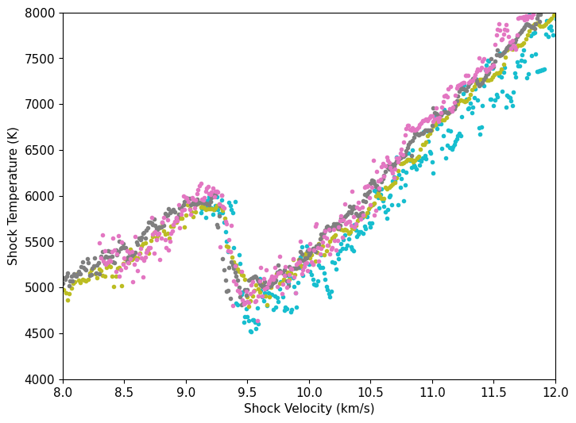
Evidence for Quartz Hugoniot Melt Curve Crossing#
Using Knudson & Desjarlais 2009 liquid region Hugoniot#
First plot the density vs. temperature and derivative using the liquid branch Hugoniot fit from Knudson and Desjarlais [2009] for all data points.
#plt.figure(figsize=fsize)
figure, ax = plt.subplots(figsize=fsize)
ax.set_prop_cycle(custom_cycler)
plt.rcParams['lines.markersize'] = mks
mss=mks/2
# these data
# first smooth each Omega decaying shock
zzz = np.where((M70817.rho > 5) & (M70817.rho <5.75))[0]
that17 = savgol_filter(M70817.T[zzz], 51, 2) # window size 51, polynomial order 3
zzz17 = deepcopy(zzz)
plt.plot(M70817.rho[zzz],M70817.T[zzz],'.',markersize=mss,label='Omega qtz(z)')
plt.plot(M70817.rho[zzz],that17)
zzz = np.where((M70811.rho > 5) & (M70811.rho <5.75))[0]
that11 = savgol_filter(M70811.T[zzz], 51, 2) # window size 51, polynomial order 3
zzz11 = deepcopy(zzz)
plt.plot(M70811.rho[zzz],M70811.T[zzz],'.',markersize=mss,label='Omega qtz(z)')
plt.plot(M70811.rho[zzz],that11)
zzz = np.where((M70813.rho > 5) & (M70813.rho <5.75))[0]
zzz13 = deepcopy(zzz)
that13 = savgol_filter(M70813.T[zzz], 51, 2) # window size 51, polynomial order 3
plt.plot(M70813.rho[zzz],M70813.T[zzz],'.',markersize=mss,label='Omega qtz(z)')
plt.plot(M70813.rho[zzz],that13)
zzz = np.where((M70820.rho > 5) & (M70820.rho <5.75))[0]
zzz20 = deepcopy(zzz)
that20 = savgol_filter(M70820.T[zzz], 51, 2) # window size 51, polynomial order 3
plt.plot(M70820.rho[zzz],M70820.T[zzz],'.',markersize=mss,label='Omega qtz(z)')
plt.plot(M70820.rho[zzz],that20)
#plt.plot([5.06,5.06],[4000,10000])
#plt.plot([5,5.6],[6700,6700])
#plt.plot([5,5.6],[5900,5900])
#plt.plot([5.1,5.1],[4000,10000])
plt.plot([5.22,5.22],[4000,10000])
#plt.plot([5.23,5.23],[4000,10000])
#plt.plot([5.28,5.28],[4000,10000])
plt.ylim(4500,9000)
plt.xlim(5.,5.5)
plt.xlabel(r'Density (g/cm$^3$)')
plt.ylabel('Temperature (K)')
plt.title('Density using KD09 liquid Hugoniot')
plt.show()
if 1:
print('Change in dT/drho at 5.2 g/cm3, corresponds to Us (km/s)=',np.interp(5.2,qtz_hug_liq.rho,qtz_hug_liq.us))
print('Change in dT/drho at 5.2 g/cm3, corresponds to P (GPa)=',np.interp(5.2,qtz_hug_liq.rho,qtz_hug_liq.P))
print('Change in dT/drho at 5.2 g/cm3, corresponds to T (K)=',np.interp(5.2,qtz_hug_liq.rho,qtz_hug_liq.T))
print('Change in dT/drho at 5.28 g/cm3, corresponds to Us (km/s)=',np.interp(5.28,qtz_hug_liq.rho,qtz_hug_liq.us))
print('Change in dT/drho at 5.28 g/cm3, corresponds to P (GPa)=',np.interp(5.28,qtz_hug_liq.rho,qtz_hug_liq.P))
print('Change in dT/drho at 5.24 g/cm3, corresponds to Us (km/s)=',np.interp(5.24,qtz_hug_liq.rho,qtz_hug_liq.us))
print('Change in dT/drho at 5.24 g/cm3, corresponds to P (GPa)=',np.interp(5.24,qtz_hug_liq.rho,qtz_hug_liq.P))
print('Change in dT/drho at 5.24 g/cm3, corresponds to T (K)=',np.interp(5.24,qtz_hug_liq.rho,qtz_hug_liq.T))
print('Change in dT/drho at 5.22 g/cm3, corresponds to Us (km/s)=',np.interp(5.22,qtz_hug_liq.rho,qtz_hug_liq.us))
print('Change in dT/drho at 5.22 g/cm3, corresponds to P (GPa)=',np.interp(5.22,qtz_hug_liq.rho,qtz_hug_liq.P))
print('Change in dT/drho at 5.22 g/cm3, corresponds to T (K)=',np.interp(5.22,qtz_hug_liq.rho,qtz_hug_liq.T))
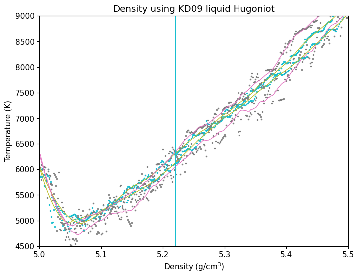
Change in dT/drho at 5.2 g/cm3, corresponds to Us (km/s)= 10.524307923035403
Change in dT/drho at 5.2 g/cm3, corresponds to P (GPa)= 143.93614261127234
Change in dT/drho at 5.2 g/cm3, corresponds to T (K)= 6039.734301156133
Change in dT/drho at 5.28 g/cm3, corresponds to Us (km/s)= 11.081699967461113
Change in dT/drho at 5.28 g/cm3, corresponds to P (GPa)= 162.09905526126101
Change in dT/drho at 5.24 g/cm3, corresponds to Us (km/s)= 10.801236219526364
Change in dT/drho at 5.24 g/cm3, corresponds to P (GPa)= 152.8133659936052
Change in dT/drho at 5.24 g/cm3, corresponds to T (K)= 6406.819752069764
Change in dT/drho at 5.22 g/cm3, corresponds to Us (km/s)= 10.662314844450925
Change in dT/drho at 5.22 g/cm3, corresponds to P (GPa)= 148.3240357095087
Change in dT/drho at 5.22 g/cm3, corresponds to T (K)= 6221.0012069785635

Fig. 20 Slope of temperature vs. density in the Omega decaying shock data in quartz converting assuming all in the liquid field. Note the offset at a density of 5.2 g/cm\(^3\), corresponding to Us=10.4 km/s. The change in slope indicates a change in heat capacity from the assumed model. The lower density region appears to have approximately half the change in temperature with change in density.#
#plt.figure(figsize=fsize)
figure, ax = plt.subplots(figsize=fsize)
ax.set_prop_cycle(custom_cycler)
plt.plot(M70811.rho[zzz11],np.gradient(that11,M70811.rho[zzz11]),'.',label='70811')
plt.plot(M70813.rho[zzz13],np.gradient(that13,M70813.rho[zzz13]),'.',label='70813')
plt.plot(M70817.rho[zzz17],np.gradient(that17,M70817.rho[zzz17]),'.',label='70817')
plt.plot(M70820.rho[zzz20],np.gradient(that20,M70820.rho[zzz20]),'.',label='70820')
#plt.plot([5.06,5.06],[-3e4,3e4])
#plt.plot([5.1,5.1],[-3e4,3e4])
#plt.plot([5.2,5.2],[-3e4,3e4],'--',color='grey')
plt.plot([5.22,5.22],[-3e4,3e4],'--',color='grey')
#plt.plot([5.23,5.23],[-3e4,3e4],'--',color='grey')
plt.fill_between([5.2,5.24],[0,0],[25000,25000],color='grey',alpha=0.2)
plt.plot([5,5.7],[1.1e4,1.1e4],'k-',linewidth=2)
plt.ylim(0,2.5e4)
plt.xlim(5.,5.5)
#plt.title('Slope of T vs. rho (KD09 liquid Hugoniot)')
plt.xlabel(r'Density ρ (g/cm$^3$)')
plt.ylabel('dT/dρ (K/(g/cm$^3$))')
plt.legend(fontsize=lfss)
plt.tight_layout()
plt.savefig(outputfigpath+tag+'B-omega-kink.pdf')
plt.show()
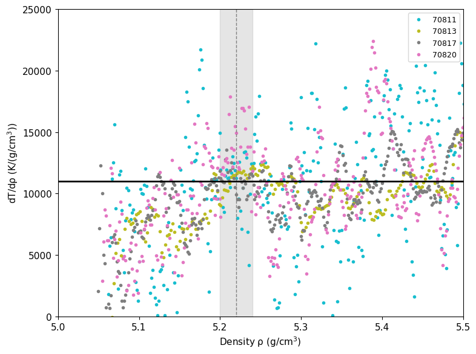
Fig. 21 Slope of temperature vs. density in the Omega decaying shock data in quartz converting assuming all in the liquid field. Note the offset at a density of 5.2 g/cm\(^3\), corresponding to Us=10.6 km/s. The change in slope indicates a change in heat capacity from the assumed model. The lower density region appears to have approximately half the change in temperature with change in density.#
Us-up Fits#
Do not use Amodeo shot numbers 44 or 28. These are fitted for shock states.
Do not use shot 27 - this has a multi-wave structure.
# ODR FITS HERE: STV and CACL2 separately
# CLEAN UP FITS PLOT
fig = plt.figure(figsize=(10, 6))
ind = np.where(qtz_hug_liq.P>110)[0]
plt.plot(qtz_hug_liq.up[ind],qtz_hug_liq.us[ind],'g-',linewidth=1,label='Qtz KD Liquid')
plt.plot([0,20],[qtz_startliq_us,qtz_startliq_us],'-',color='grey',label='Transition to liquid')
inda = np.where((shockdat_list[A23qtz['id']].exp_id != 'shot44') & (shockdat_list[A23qtz['id']].exp_id != 'shot28'))[0]
plt.errorbar(shockdat_list[A23qtz['id']].up[inda],shockdat_list[A23qtz['id']].us[inda],fmt='gD',mfc='white',label=A23qtz['lab'],\
xerr=shockdat_list[A23qtz['id']].up_std[inda],yerr=shockdat_list[A23qtz['id']].us_std[inda])
plt.errorbar(shockdat_list[K13qtz['id']].up,shockdat_list[K13qtz['id']].us,fmt='gd',markersize=6,\
xerr=shockdat_list[K13qtz['id']].up_std,yerr=shockdat_list[K13qtz['id']].us_std,label=K13qtz['lab']+'(z)')
ind = np.where(shockdat_list[B88RRqtz['id']].orientation == 'z')[0]#[1:3]
plt.errorbar(shockdat_list[B88RRqtz['id']].up[ind],shockdat_list[B88RRqtz['id']].us[ind],fmt='go',mfc='yellow',\
label=B88RRqtz['lab']+'(z)')
ind = np.where(shockdat_list[W62qtz['id']].orientation==' z')[0]
plt.errorbar(shockdat_list[W62qtz['id']].up[ind],shockdat_list[W62qtz['id']].us[ind],fmt='gx',label=W62qtz['lab']+'(z)')
ind = np.where(shockdat_list[W62qtz['id']].orientation==' y')[0]
plt.errorbar(shockdat_list[W62qtz['id']].up[ind],shockdat_list[W62qtz['id']].us[ind],fmt='x',color='limegreen',label=W62qtz['lab']+'(y)')
ind = np.where(shockdat_list[W62qtz['id']].orientation==' x')[0]
plt.errorbar(shockdat_list[W62qtz['id']].up[ind],shockdat_list[W62qtz['id']].us[ind],fmt='+',color='yellowgreen',label=W62qtz['lab']+'(x)')
# Altshuler
#plt.plot([3.13,3.92,6.2],[7.18,8.54,12.01],'s',color='grey',label='A65 qtz(unknown)')
if 1:
# fit UCD and Z z-cut points only
ind = np.where((np.asarray(shockdat_list[A23qtz['id']].up) > 3.6) & (np.asarray(shockdat_list[A23qtz['id']].up) < 4.6) & (shockdat_list[A23qtz['id']].exp_id != 'shot44') & (shockdat_list[A23qtz['id']].exp_id != 'shot28') & (shockdat_list[A23qtz['id']].exp_id != 'shot27'))[0]
fitupa=np.asarray(shockdat_list[A23qtz['id']].up)[ind]
fitusa=np.asarray(shockdat_list[A23qtz['id']].us)[ind]
print(np.asarray(shockdat_list[A23qtz['id']].exp_id)[ind])
print('NEW UCD cacl2 fit',ind,fitupa,fitusa)
ind = np.where((np.asarray(shockdat_list[K13qtz['id']].up) > 3.6) & (np.asarray(shockdat_list[K13qtz['id']].up) < 4.6))[0]
fitupb=np.asarray(shockdat_list[K13qtz['id']].up)[ind]
fitusb=np.asarray(shockdat_list[K13qtz['id']].us)[ind]
print('NEW K13 cacl2 fit',ind,fitupb,fitusb)
fitup = np.concatenate((fitupa,fitupb))
fitus = np.concatenate((fitusa,fitusb))
if 0:
print('Stv region Wackerle y-cut data only (4 pts)')
indb = np.where(shockdat_list[W62qtz['id']].orientation == ' y')[0]
# only wackerle
#rescov = np.polyfit(shockdat_list[W62qtz['id']].up[indb],shockdat_list[W62qtz['id']].us[indb],1,cov=True)
# Wackerle + 1 altshuler 1965
fitup = shockdat_list[W62qtz['id']].up[indb]
fitus = shockdat_list[W62qtz['id']].us[indb]
if 1:
print('Stv region Wackerle + Amodeo all single wave data')
inda = np.where((shockdat_list[A23qtz['id']].up<3.6) & (shockdat_list[A23qtz['id']].exp_id != 'shot44') & (shockdat_list[A23qtz['id']].exp_id != 'shot28'))[0]
print(shockdat_list[A23qtz['id']].exp_id[inda])
fitupstv1 = [shockdat_list[W62qtz['id']].up,shockdat_list[A23qtz['id']].up[inda]]
fitupstv = np.concatenate([np.atleast_1d(x) for x in fitupstv1])
fituperrstv1 = [shockdat_list[W62qtz['id']].up_std,shockdat_list[A23qtz['id']].up_std[inda]]
fituperrstv = np.concatenate([np.atleast_1d(x) for x in fituperrstv1])
fitusstv1 = [shockdat_list[W62qtz['id']].us,shockdat_list[A23qtz['id']].us[inda]]
fitusstv = np.concatenate([np.atleast_1d(x) for x in fitusstv1])
fituserrstv1 = [shockdat_list[W62qtz['id']].us_std,shockdat_list[A23qtz['id']].us_std[inda]]
fituserrstv = np.concatenate([np.atleast_1d(x) for x in fituserrstv1])
r1 = np.full(len(shockdat_list[W62qtz['id']].us), shockdat_list[W62qtz['id']].refidlist[1], dtype=int)
r2 = np.full(len(inda), shockdat_list[A23qtz['id']].refidlist[1], dtype=int)
fitqtzrefid2 = np.concatenate((r1,r2))
fitqtzreflist2=[]
for i in np.unique(fitqtzrefid2):
fitqtzreflist2.append(str(i)+': '+ref_list[i].reference[0])
print('HPEOS T-Us FIT STV REGION')
# initialize the HPeos_Fit class
qtz_fit_stv = hp.HPeos_Fit()
qtz_fit_stv.matid = 174
qtz_fit_stv.material = 'Quartz'
qtz_fit_stv.formula = 'SiO2'
qtz_fit_stv.rho_ref = 2.650
qtz_fit_stv.rho_ref_units = 'g/cm³'
qtz_fit_stv.x = fitupstv
qtz_fit_stv.f = fitusstv
qtz_fit_stv.x_std = fituperrstv
qtz_fit_stv.f_std = fituserrstv
qtz_fit_stv.refid = fitqtzrefid2
qtz_fit_stv.reflist = fitqtzreflist2
qtz_fit_stv.x_var = 'up'
qtz_fit_stv.f_var = 'us'
qtz_fit_stv.x_units = 'km/s'
qtz_fit_stv.f_units = 'km/s'
qtz_fit_stv.x_desc = 'Particle Velocity'
qtz_fit_stv.f_desc = 'Shock Velocity'
qtz_fit_stv.phase_fit = 'stishovite'
qtz_fit_stv.remlist.append('Fit to stishovite region on the Hugoniot.')
qtz_fit_stv.remlist.append('Only including single wave shock data on alpha-quartz: x,y,z cut from Wackerle 1962. z-cut from Amodeo et al. in prep.')
DateTime_in_ISOFormat = datetime.datetime.now(zoneinfo.ZoneInfo('UTC')).isoformat('T', 'seconds') #
qtz_fit_stv.actions = [['Sarah T. Stewart','create',DateTime_in_ISOFormat,'new fit']]
qtz_fit_stv.curvetype = 'linear'
qtz_fit_stv.outputfitpath = outputfitpath # in load_paths.py
qtz_fit_stv.filename = 'qtz_fit_stv_linear'
qtz_fit_stv.fit()
print('FIT EOS a = ',qtz_fit_stv.a)
print('FIT EOS cov = ',qtz_fit_stv.cov)
qtz_fit_stv.savejson()
qtz_fit_stv.savereadable()
print('rms = ',qtz_fit_stv.rms)
print('qtz_fit_stv check:')
qtz_fit_stv.comparecoefs(qtz_fit_stv0.a)
nup = np.arange(.8*qtz_fit_stv.xrange[0],1.2*qtz_fit_stv.xrange[1],.04)
nus = qtz_fit_stv.calcf(nup)
plt.plot(nup,nus,'r--',label='stv linear')
if 0:
resstvinit = np.polyfit(fitupstv,fitusstv,1)
data = RealData(fitupstv, fitusstv, sx=fituperrstv, sy=fituserrstv)
odr = ODR(data, linear_model, beta0=resstvinit) # Initial guess: slope=1, intercept=0
output=odr.run()
resstv = output.beta
covstv = output.cov_beta
print('STV ODR linear fit = ',resstv)
print(covstv)
fitup = np.arange(min(fitupstv),4.5,.01)
plt.plot(fitup,resstv[1]+resstv[0]*fitup,'g-')
print('number of points=',len(fitupstv))
if 1:
print('>70 GPa region Knudsen + Amodeo + 1 Boslough + Wackerle z-cut and below solidus')
upmax = 4.29
inda = np.where((shockdat_list[A23qtz['id']].up>3.6) & (shockdat_list[A23qtz['id']].up<upmax) & (shockdat_list[A23qtz['id']].exp_id != 'shot44') & (shockdat_list[A23qtz['id']].exp_id != 'shot28'))[0]
print(shockdat_list[A23qtz['id']].exp_id[inda])
indk = np.where((shockdat_list[K13qtz['id']].up>3.6) & (shockdat_list[K13qtz['id']].up<upmax))[0]
#indb = np.where(shockdat_list[B88RRqtz['id']].orientation == 'z')[0][0]
indw = np.arange(len(shockdat_list[W62qtz['id']].up))#np.where(shockdat_list[W62qtz['id']].orientation == ' z')[0]
#print('indb=',indb,shockdat_list[B88RRqtz['id']].up[indb])
print('indw=',indw)
print(shockdat_list[A23qtz['id']].up[inda])
if 0:
fitupstv1 = [shockdat_list[K13qtz['id']].up[indk],shockdat_list[A23qtz['id']].up[inda]]
fitupstv = np.concatenate([np.atleast_1d(x) for x in fitupstv1])
fituperrstv1 = [shockdat_list[K13qtz['id']].up_std[indk],shockdat_list[A23qtz['id']].up_std[inda]]
fituperrstv = np.concatenate([np.atleast_1d(x) for x in fituperrstv1])
fitusstv1 = [shockdat_list[K13qtz['id']].us[indk],shockdat_list[A23qtz['id']].us[inda]]
fitusstv = np.concatenate([np.atleast_1d(x) for x in fitusstv1])
fituserrstv1 = [shockdat_list[K13qtz['id']].us_std[indk],shockdat_list[A23qtz['id']].us_std[inda]]
fituserrstv = np.concatenate([np.atleast_1d(x) for x in fituserrstv1])
if 0: # with boslough
fitupstv1 = [shockdat_list[K13qtz['id']].up[indk],shockdat_list[A23qtz['id']].up[inda],shockdat_list[B88RRqtz['id']].up[indb],shockdat_list[W62qtz['id']].up[indw]]
fitupstv = np.concatenate([np.atleast_1d(x) for x in fitupstv1])
fituperrstv1 = [shockdat_list[K13qtz['id']].up_std[indk],shockdat_list[A23qtz['id']].up_std[inda],shockdat_list[B88RRqtz['id']].up_std[indb],shockdat_list[W62qtz['id']].up_std[indw]]
fituperrstv = np.concatenate([np.atleast_1d(x) for x in fituperrstv1])
fitusstv1 = [shockdat_list[K13qtz['id']].us[indk],shockdat_list[A23qtz['id']].us[inda],shockdat_list[B88RRqtz['id']].us[indb],shockdat_list[W62qtz['id']].us[indw]]
fitusstv = np.concatenate([np.atleast_1d(x) for x in fitusstv1])
fituserrstv1 = [shockdat_list[K13qtz['id']].us_std[indk],shockdat_list[A23qtz['id']].us_std[inda],shockdat_list[B88RRqtz['id']].us_std[indb],shockdat_list[W62qtz['id']].us_std[indw]]
fituserrstv = np.concatenate([np.atleast_1d(x) for x in fituserrstv1])
fitupstv1 = [shockdat_list[K13qtz['id']].up[indk],shockdat_list[A23qtz['id']].up[inda],shockdat_list[W62qtz['id']].up[indw]]
fitupstv = np.concatenate([np.atleast_1d(x) for x in fitupstv1])
fituperrstv1 = [shockdat_list[K13qtz['id']].up_std[indk],shockdat_list[A23qtz['id']].up_std[inda],shockdat_list[W62qtz['id']].up_std[indw]]
fituperrstv = np.concatenate([np.atleast_1d(x) for x in fituperrstv1])
fitusstv1 = [shockdat_list[K13qtz['id']].us[indk],shockdat_list[A23qtz['id']].us[inda],shockdat_list[W62qtz['id']].us[indw]]
fitusstv = np.concatenate([np.atleast_1d(x) for x in fitusstv1])
fituserrstv1 = [shockdat_list[K13qtz['id']].us_std[indk],shockdat_list[A23qtz['id']].us_std[inda],shockdat_list[W62qtz['id']].us_std[indw]]
fituserrstv = np.concatenate([np.atleast_1d(x) for x in fituserrstv1])
r1 = np.full(len(indk), shockdat_list[K13qtz['id']].refidlist[1], dtype=int)
r2 = np.full(len(inda), shockdat_list[A23qtz['id']].refidlist[1], dtype=int)
#r3 = np.full(1, shockdat_list[B88RRqtz['id']].refidlist[1], dtype=int)
r4 = np.full(len(indw), shockdat_list[W62qtz['id']].refidlist[1], dtype=int)
fitqtzrefid2 = np.concatenate((r1,r2,r4))
fitqtzreflist2=[]
for i in np.unique(fitqtzrefid2):
fitqtzreflist2.append(str(i)+': '+ref_list[i].reference[0])
print('HPEOS T-Us FIT SOLID SINGLE WAVEFRONT REGION P>70 GPa, Us>=7.76 km/s')
# initialize the HPeos_Fit class
qtz_fit_cacl2 = hp.HPeos_Fit()
qtz_fit_cacl2.matid = 174
qtz_fit_cacl2.material = 'Quartz'
qtz_fit_cacl2.formula = 'SiO2'
qtz_fit_cacl2.rho_ref = 2.650
qtz_fit_cacl2.rho_ref_units = 'g/cm³'
qtz_fit_cacl2.x = fitupstv
qtz_fit_cacl2.f = fitusstv
qtz_fit_cacl2.x_std = fituperrstv
qtz_fit_cacl2.f_std = fituserrstv
qtz_fit_cacl2.refid = fitqtzrefid2
qtz_fit_cacl2.reflist = fitqtzreflist2
qtz_fit_cacl2.x_var = 'up'
qtz_fit_cacl2.f_var = 'us'
qtz_fit_cacl2.x_units = 'km/s'
qtz_fit_cacl2.f_units = 'km/s'
qtz_fit_cacl2.x_desc = 'Particle Velocity'
qtz_fit_cacl2.f_desc = 'Shock Velocity'
qtz_fit_cacl2.phase_fit = 'CaCl2'
qtz_fit_cacl2.remlist.append('Fit to CaCl2-type region on the Hugoniot.')
qtz_fit_cacl2.remlist.append('Only including single wave shock data on alpha-quartz: x,y,z cut from Wackerle 1962. z-cut from Amodeo et al. in prep.')
DateTime_in_ISOFormat = datetime.datetime.now(zoneinfo.ZoneInfo('UTC')).isoformat('T', 'seconds') #
qtz_fit_cacl2.actions = [['Sarah T. Stewart','create',DateTime_in_ISOFormat,'new fit']]
qtz_fit_cacl2.curvetype = 'linear'
qtz_fit_cacl2.outputfitpath = outputfitpath # in load_paths.py
qtz_fit_cacl2.filename = 'qtz_fit_cacl2_linear'
qtz_fit_cacl2.fit()
print('FIT EOS a = ',qtz_fit_cacl2.a)
print('FIT EOS cov = ',qtz_fit_cacl2.cov)
qtz_fit_cacl2.savejson()
qtz_fit_cacl2.savereadable()
print('rms = ',qtz_fit_cacl2.rms)
print('qtz_fit_cacl2 check:')
qtz_fit_cacl2.comparecoefs(qtz_fit_cacl20.a)
nup = np.arange(.8*qtz_fit_cacl2.xrange[0],1.2*qtz_fit_cacl2.xrange[1],.04)
nus = qtz_fit_cacl2.calcf(nup)
plt.plot(fitupstv,fitusstv,'rX',markersize=10)
plt.plot(nup,nus,'r--',label='Solid linear')
if 0:
resstvinit = np.polyfit(fitupstv,fitusstv,1)
data = RealData(fitupstv, fitusstv, sx=fituperrstv, sy=fituserrstv)
odr = ODR(data, linear_model, beta0=resstvinit) # Initial guess: slope=1, intercept=0
output=odr.run()
resstv = output.beta
covstv = output.cov_beta
print('CACL2 ODR linear fit = ',resstv)
print(covstv)
fitup = np.arange(min(fitupstv),5.5,.01)
plt.plot(fitup,resstv[1]+resstv[0]*fitup,'b:')
print('number of points=',len(fitupstv))
if 0:
print('CACL2 + MC region Knudsen + Amodeo + Boslough')
inda = np.where((shockdat_list[A23qtz['id']].up>3.6) & (shockdat_list[A23qtz['id']].up<5.5) & (shockdat_list[A23qtz['id']].exp_id != 'shot44') & (shockdat_list[A23qtz['id']].exp_id != 'shot28'))[0]
print(shockdat_list[A23qtz['id']].exp_id[inda])
indk = np.where((shockdat_list[K13qtz['id']].up>3.6) & (shockdat_list[K13qtz['id']].up<5.5))[0]
indb = np.where(shockdat_list[B88RRqtz['id']].orientation == 'z')[0][0:3]
#print(np.asarray(shockdat_list[B88RRqtz['id']].exp_id)[indb])
print(indb)
fitupstv1 = [shockdat_list[K13qtz['id']].up[indk],shockdat_list[A23qtz['id']].up[inda],shockdat_list[B88RRqtz['id']].up[indb]]
fitupstv = np.concatenate([np.atleast_1d(x) for x in fitupstv1])
fituperrstv1 = [shockdat_list[K13qtz['id']].up_std[indk],shockdat_list[A23qtz['id']].up_std[inda],shockdat_list[B88RRqtz['id']].up_std[indb]]
fituperrstv = np.concatenate([np.atleast_1d(x) for x in fituperrstv1])
fitusstv1 = [shockdat_list[K13qtz['id']].us[indk],shockdat_list[A23qtz['id']].us[inda],shockdat_list[B88RRqtz['id']].us[indb]]
fitusstv = np.concatenate([np.atleast_1d(x) for x in fitusstv1])
fituserrstv1 = [shockdat_list[K13qtz['id']].us_std[indk],shockdat_list[A23qtz['id']].us_std[inda],shockdat_list[B88RRqtz['id']].us_std[indb]]
fituserrstv = np.concatenate([np.atleast_1d(x) for x in fituserrstv1])
print(fitupstv,fitusstv)
resstvinit = np.polyfit(fitupstv,fitusstv,1)
data = RealData(fitupstv, fitusstv, sx=fituperrstv, sy=fituserrstv)
odr = ODR(data, linear_model, beta0=resstvinit) # Initial guess: slope=1, intercept=0
output=odr.run()
resstv = output.beta
covstv = output.cov_beta
print('CACL2 + MC ODR linear fit = ',resstv)
print(covstv)
fitup = np.arange(min(fitupstv),5.5,.01)
plt.plot(fitup,resstv[1]+resstv[0]*fitup,'g:')
print('number of points=',len(fitupstv))
plt.fill_between([0,20],[qtz_wiggle_us1,qtz_wiggle_us1],[qtz_wiggle_us2,qtz_wiggle_us2],color='lightgrey',label='Qtz temp. inversion')
plt.plot([0,20],[qtz_trans_cacl2_us,qtz_trans_cacl2_us],':',color='grey',label='Transition stv to CaCl2')
plt.ylim(5.5,11.5)
plt.xlim(2.25,6.)
plt.legend(loc='center left', bbox_to_anchor=(1, 0.5))
#plt.plot(fitup3,fitus3,'g:')
#plt.plot(fitup2,fitus2,'r:')
plt.xlabel('Particle Velocity (km/s)')
plt.ylabel('Shock Velocity (km/s)')
plt.title('Qtz Hugoniot Fits')
figname='H5-qtz-us-up'
plt.tight_layout()
plt.savefig(outputfigpath+figname+'.pdf')
plt.show()
ind = np.where(shockdat_list[A23qtz['id']].up<3.6)[0]
print(shockdat_list[A23qtz['id']].exp_id[ind])
['shot14' 'shot45' 'shot47' 'shot48']
NEW UCD cacl2 fit [0 6 7 8] [3.89976088 4.45071699 4.28110121 3.7721416 ] [8.46 9.317 9.032 8.2994]
NEW K13 cacl2 fit [0 1 2 3 4 5] [4.01998145 4.02241575 4.02817136 4.29605353 4.57151152 4.59792034] [8.65 8.71 8.75 9.25 9.69 9.72]
Stv region Wackerle + Amodeo all single wave data
['shot27']
HPEOS T-Us FIT STV REGION
FIT EOS a = [1.52569548 1.7767883 ]
FIT EOS cov = [[ 0.04325045 -0.01350526]
[-0.01350526 0.00425656]]
Saved EOS fit in qtz_fit_stv_linear.txt
Saved EOS fit in readable file qtz_fit_stv_linear-readable.txt
rms = 0.06548426167295733
qtz_fit_stv check:
Coefficients are the same.
[1.52569548 1.7767883 ]
[1.52569548 1.7767883 ]
>70 GPa region Knudsen + Amodeo + 1 Boslough + Wackerle z-cut and below solidus
['shot14' 'shot47' 'shot48']
indw= [ 0 1 2 3 4 5 6 7 8 9 10]
[3.89976088 4.28110121 3.7721416 ]
HPEOS T-Us FIT SOLID SINGLE WAVEFRONT REGION P>70 GPa, Us>=7.76 km/s
FIT EOS a = [1.45201539 1.810208 ]
FIT EOS cov = [[ 0.01155937 -0.00310905]
[-0.00310905 0.00084192]]
Saved EOS fit in qtz_fit_cacl2_linear.txt
Saved EOS fit in readable file qtz_fit_cacl2_linear-readable.txt
rms = 0.07920141389491386
qtz_fit_cacl2 check:
Coefficients are different = 1.4697825138676341
***** COEFFICIENTS DO NOT MATCH!! ********
[2.61789622 1.50630632]
[1.45201539 1.810208 ]
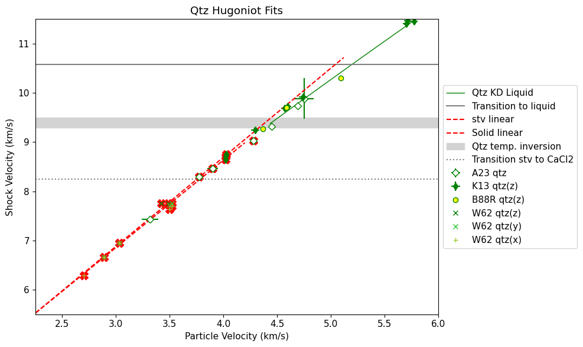
['shot27' 'shot28' 'shot44']
# FIT ALL SOLID WITH ONE Us-Up z-cut only
# CLEAN UP FITS PLOT
fig = plt.figure(figsize=(10, 6))
ind = np.where(qtz_hug_liq.P>110)[0]
plt.plot(qtz_hug_liq.up[ind],qtz_hug_liq.us[ind],'g-',linewidth=1,label='Qtz KD Liquid')
plt.plot([0,20],[qtz_startliq_us,qtz_startliq_us],'-',color='grey',label='Transition to liquid')
inda = np.where((shockdat_list[A23qtz['id']].exp_id != 'shot44') & (shockdat_list[A23qtz['id']].exp_id != 'shot28'))[0]
plt.errorbar(shockdat_list[A23qtz['id']].up[inda],shockdat_list[A23qtz['id']].us[inda],fmt='gD',mfc='white',label=A23qtz['lab'],\
xerr=shockdat_list[A23qtz['id']].up_std[inda],yerr=shockdat_list[A23qtz['id']].us_std[inda])
plt.errorbar(shockdat_list[K13qtz['id']].up,shockdat_list[K13qtz['id']].us,fmt='gd',markersize=6,\
xerr=shockdat_list[K13qtz['id']].up_std,yerr=shockdat_list[K13qtz['id']].us_std,label=K13qtz['lab']+'(z)')
ind = np.where(shockdat_list[B88RRqtz['id']].orientation == 'z')[0]#[1:3]
plt.errorbar(shockdat_list[B88RRqtz['id']].up[ind],shockdat_list[B88RRqtz['id']].us[ind],fmt='go',mfc='yellow',\
label=B88RRqtz['lab']+'(z)')
ind = np.where(shockdat_list[W62qtz['id']].orientation==' z')[0]
plt.errorbar(shockdat_list[W62qtz['id']].up[ind],shockdat_list[W62qtz['id']].us[ind],fmt='gx',label=W62qtz['lab']+'(z)')
ind = np.where(shockdat_list[W62qtz['id']].orientation==' y')[0]
plt.errorbar(shockdat_list[W62qtz['id']].up[ind],shockdat_list[W62qtz['id']].us[ind],fmt='x',color='limegreen',label=W62qtz['lab']+'(y)')
ind = np.where(shockdat_list[W62qtz['id']].orientation==' x')[0]
plt.errorbar(shockdat_list[W62qtz['id']].up[ind],shockdat_list[W62qtz['id']].us[ind],fmt='+',color='yellowgreen',label=W62qtz['lab']+'(x)')
# Altshuler
plt.plot([3.13,3.92,6.2],[7.18,8.54,12.01],'s',color='grey',label='A65 qtz(unknown)')
if 0:
# fit UCD and Z z-cut points only
ind = np.where((np.asarray(shockdat_list[A23qtz['id']].up) > 3.6) & (np.asarray(shockdat_list[A23qtz['id']].up) < 4.6) & (shockdat_list[A23qtz['id']].exp_id != 'shot44') & (shockdat_list[A23qtz['id']].exp_id != 'shot28'))[0]
fitupa=np.asarray(shockdat_list[A23qtz['id']].up)[ind]
fitusa=np.asarray(shockdat_list[A23qtz['id']].us)[ind]
print(np.asarray(shockdat_list[A23qtz['id']].exp_id)[ind])
print('NEW UCD cacl2 fit',ind,fitupa,fitusa)
ind = np.where((np.asarray(shockdat_list[K13qtz['id']].up) > 3.6) & (np.asarray(shockdat_list[K13qtz['id']].up) < 4.6))[0]
fitupb=np.asarray(shockdat_list[K13qtz['id']].up)[ind]
fitusb=np.asarray(shockdat_list[K13qtz['id']].us)[ind]
print('NEW K13 cacl2 fit',ind,fitupb,fitusb)
fitup = np.concatenate((fitupa,fitupb))
fitus = np.concatenate((fitusa,fitusb))
if 0:
print('Stv region Wackerle + Amodeo all single wave data')
inda = np.where((shockdat_list[A23qtz['id']].up<3.6) & (shockdat_list[A23qtz['id']].exp_id != 'shot44') & (shockdat_list[A23qtz['id']].exp_id != 'shot28'))[0]
print(shockdat_list[A23qtz['id']].exp_id[inda])
fitupstv1 = [shockdat_list[W62qtz['id']].up,shockdat_list[A23qtz['id']].up[inda]]
fitupstv = np.concatenate([np.atleast_1d(x) for x in fitupstv1])
fituperrstv1 = [shockdat_list[W62qtz['id']].up_std,shockdat_list[A23qtz['id']].up_std[inda]]
fituperrstv = np.concatenate([np.atleast_1d(x) for x in fituperrstv1])
fitusstv1 = [shockdat_list[W62qtz['id']].us,shockdat_list[A23qtz['id']].us[inda]]
fitusstv = np.concatenate([np.atleast_1d(x) for x in fitusstv1])
fituserrstv1 = [shockdat_list[W62qtz['id']].us_std,shockdat_list[A23qtz['id']].us_std[inda]]
fituserrstv = np.concatenate([np.atleast_1d(x) for x in fituserrstv1])
r1 = np.full(len(shockdat_list[W62qtz['id']].us), shockdat_list[W62qtz['id']].refidlist[1], dtype=int)
r2 = np.full(len(inda), shockdat_list[A23qtz['id']].refidlist[1], dtype=int)
fitqtzrefid2 = np.concatenate((r1,r2))
fitqtzreflist2=[]
for i in np.unique(fitqtzrefid2):
fitqtzreflist2.append(str(i)+': '+ref_list[i].reference[0])
print('HPEOS T-Us FIT STV REGION')
# initialize the HPeos_Fit class
qtz_fit_stv = hp.HPeos_Fit()
qtz_fit_stv.matid = 174
qtz_fit_stv.material = 'Quartz'
qtz_fit_stv.formula = 'SiO2'
qtz_fit_stv.rho_ref = 2.650
qtz_fit_stv.rho_ref_units = 'g/cm³'
qtz_fit_stv.x = fitupstv
qtz_fit_stv.f = fitusstv
qtz_fit_stv.x_std = fituperrstv
qtz_fit_stv.f_std = fituserrstv
qtz_fit_stv.refid = fitqtzrefid2
qtz_fit_stv.reflist = fitqtzreflist2
qtz_fit_stv.x_var = 'up'
qtz_fit_stv.f_var = 'us'
qtz_fit_stv.x_units = 'km/s'
qtz_fit_stv.f_units = 'km/s'
qtz_fit_stv.x_desc = 'Particle Velocity'
qtz_fit_stv.f_desc = 'Shock Velocity'
qtz_fit_stv.phase_fit = 'stishovite'
qtz_fit_stv.remlist.append('Fit to stishovite region on the Hugoniot.')
qtz_fit_stv.remlist.append('Only including single wave shock data on alpha-quartz: x,y,z cut from Wackerle 1962. z-cut from Amodeo et al. in prep.')
DateTime_in_ISOFormat = datetime.datetime.now(zoneinfo.ZoneInfo('UTC')).isoformat('T', 'seconds') #
qtz_fit_stv.actions = [['Sarah T. Stewart','create',DateTime_in_ISOFormat,'new fit']]
qtz_fit_stv.curvetype = 'linear'
qtz_fit_stv.outputfitpath = outputfitpath # in load_paths.py
qtz_fit_stv.filename = 'qtz_fit_stv_linear'
qtz_fit_stv.fit()
print('FIT EOS a = ',qtz_fit_stv.a)
print('FIT EOS cov = ',qtz_fit_stv.cov)
qtz_fit_stv.savejson()
qtz_fit_stv.savereadable()
print('rms = ',qtz_fit_stv.rms)
print('qtz_fit_stv check:')
qtz_fit_stv.comparecoefs(qtz_fit_stv0.a)
nup = np.arange(.8*qtz_fit_stv.xrange[0],1.2*qtz_fit_stv.xrange[1],.04)
nus = qtz_fit_stv.calcf(nup)
plt.plot(nup,nus,'r--',label='stv linear')
if 0:
resstvinit = np.polyfit(fitupstv,fitusstv,1)
data = RealData(fitupstv, fitusstv, sx=fituperrstv, sy=fituserrstv)
odr = ODR(data, linear_model, beta0=resstvinit) # Initial guess: slope=1, intercept=0
output=odr.run()
resstv = output.beta
covstv = output.cov_beta
print('STV ODR linear fit = ',resstv)
print(covstv)
fitup = np.arange(min(fitupstv),4.5,.01)
plt.plot(fitup,resstv[1]+resstv[0]*fitup,'g-')
print('number of points=',len(fitupstv))
if 1:
print('ALL Solid region Knudsen + Amodeo + 1 Boslough + Wackerle ')
upmax = 4.55 # km/s
inda = np.where( (shockdat_list[A23qtz['id']].up<upmax) & (shockdat_list[A23qtz['id']].us_std>0) & (shockdat_list[A23qtz['id']].exp_id != 'shot44') & (shockdat_list[A23qtz['id']].exp_id != 'shot28') & (shockdat_list[A23qtz['id']].exp_id != 'shot27'))[0]
indk = np.where((shockdat_list[K13qtz['id']].up<upmax))[0]
#indb = np.where((shockdat_list[B88RRqtz['id']].orientation == 'z') & (shockdat_list[B88RRqtz['id']].up<upmax))[0][0]
indw = np.where(shockdat_list[W62qtz['id']].up<upmax)[0]
print(shockdat_list[A23qtz['id']].exp_id[inda])
print('inda=',inda)
print('indk=',indk)
#print('indb=',indb)
print('indw=',indw)
fitx1 = [shockdat_list[K13qtz['id']].up[indk],shockdat_list[A23qtz['id']].up[inda],shockdat_list[W62qtz['id']].up[indw]]
fitx = np.concatenate([np.atleast_1d(x) for x in fitx1])
fitx_std1 = [shockdat_list[K13qtz['id']].up_std[indk],shockdat_list[A23qtz['id']].up_std[inda],shockdat_list[W62qtz['id']].up_std[indw]]
fitx_std = np.concatenate([np.atleast_1d(x) for x in fitx_std1])
fity1 = [shockdat_list[K13qtz['id']].us[indk],shockdat_list[A23qtz['id']].us[inda],shockdat_list[W62qtz['id']].us[indw]]
fity = np.concatenate([np.atleast_1d(x) for x in fity1])
fity_std1 = [shockdat_list[K13qtz['id']].us_std[indk],shockdat_list[A23qtz['id']].us_std[inda],shockdat_list[W62qtz['id']].us_std[indw]]
fity_std = np.concatenate([np.atleast_1d(x) for x in fity_std1])
r1 = np.full(len(indk), shockdat_list[K13qtz['id']].refidlist[1], dtype=int)
r2 = np.full(len(inda), shockdat_list[A23qtz['id']].refidlist[1], dtype=int)
#r3 = np.full(1, shockdat_list[B88RRqtz['id']].refidlist[1], dtype=int)
r4 = np.full(len(indw), shockdat_list[W62qtz['id']].refidlist[1], dtype=int)
fitqtzrefid2 = np.concatenate((r1,r2,r4))
fitqtzreflist2=[]
for i in np.unique(fitqtzrefid2):
fitqtzreflist2.append(str(i)+': '+ref_list[i].reference[0])
plt.plot(fitx,fity,'rX',markersize=10)
print('HPEOS T-Us FIT CACL2 REGION')
# initialize the HPeos_Fit class
qtz_fit_solid = hp.HPeos_Fit()
qtz_fit_solid.matid = 174
qtz_fit_solid.material = 'Quartz'
qtz_fit_solid.formula = 'SiO2'
qtz_fit_solid.rho_ref = 2.650
qtz_fit_solid.rho_ref_units = 'g/cm³'
qtz_fit_solid.x = fitx
qtz_fit_solid.f = fity
qtz_fit_solid.x_std = fitx_std
qtz_fit_solid.f_std = fity_std
qtz_fit_solid.refid = fitqtzrefid2
qtz_fit_solid.reflist = fitqtzreflist2
qtz_fit_solid.x_var = 'up'
qtz_fit_solid.f_var = 'us'
qtz_fit_solid.x_units = 'km/s'
qtz_fit_solid.f_units = 'km/s'
qtz_fit_solid.x_desc = 'Particle Velocity'
qtz_fit_solid.f_desc = 'Shock Velocity'
qtz_fit_solid.phase_fit = 'solid'
qtz_fit_solid.remlist.append('Fit to solid region on the Hugoniot.')
qtz_fit_solid.remlist.append('Only including single wave shock data on alpha-quartz: x,y,z cut from Wackerle 1962. z-cut from Amodeo et al. in prep.')
DateTime_in_ISOFormat = datetime.datetime.now(zoneinfo.ZoneInfo('UTC')).isoformat('T', 'seconds') #
qtz_fit_solid.actions = [['Sarah T. Stewart','create',DateTime_in_ISOFormat,'new fit']]
qtz_fit_solid.curvetype = 'linear'
qtz_fit_solid.outputfitpath = outputfitpath # in load_paths.py
qtz_fit_solid.filename = 'qtz_fit_solid_linear'
qtz_fit_solid.fit()
print('FIT EOS a = ',qtz_fit_solid.a)
print('FIT EOS cov = ',qtz_fit_solid.cov)
qtz_fit_solid.savejson()
qtz_fit_solid.savereadable()
print('rms = ',qtz_fit_solid.rms)
print('qtz_fit_solid check:')
#qtz_fit_solid.comparecoefs(qtz_fit_solid0.a)
nup = np.arange(.8*qtz_fit_solid.xrange[0],1.2*qtz_fit_solid.xrange[1],.04)
nus = qtz_fit_solid.calcf(nup)
plt.plot(nup,nus,'r--',label='solid linear')
plt.fill_between([0,20],[qtz_wiggle_us1,qtz_wiggle_us1],[qtz_wiggle_us2,qtz_wiggle_us2],color='lightgrey',label='Qtz temp. inversion')
plt.plot([0,20],[qtz_trans_cacl2_us,qtz_trans_cacl2_us],':',color='grey',label='Transition stv to CaCl2')
plt.ylim(5.5,11.5)
plt.xlim(2.25,6.)
plt.legend(loc='center left', bbox_to_anchor=(1, 0.5))
#plt.plot(fitup3,fitus3,'g:')
#plt.plot(fitup2,fitus2,'r:')
plt.xlabel('Particle Velocity (km/s)')
plt.ylabel('Shock Velocity (km/s)')
plt.title('Qtz Hugoniot -- All solid')
figname='H5-qtz-us-up'
plt.tight_layout()
plt.savefig(outputfigpath+figname+'.pdf')
plt.show()
ind = np.where(shockdat_list[A23qtz['id']].up<3.6)[0]
print(shockdat_list[A23qtz['id']].exp_id[ind])
ALL Solid region Knudsen + Amodeo + 1 Boslough + Wackerle
['shot14' 'shot45' 'shot47' 'shot48']
inda= [0 6 7 8]
indk= [0 1 2 3]
indw= [ 0 1 2 3 4 5 6 7 8 9 10]
HPEOS T-Us FIT CACL2 REGION
FIT EOS a = [1.96905488 1.66507746]
FIT EOS cov = [[ 0.00443011 -0.00112652]
[-0.00112652 0.00028981]]
Saved EOS fit in qtz_fit_solid_linear.txt
Saved EOS fit in readable file qtz_fit_solid_linear-readable.txt
rms = 0.0944169448410331
qtz_fit_solid check:
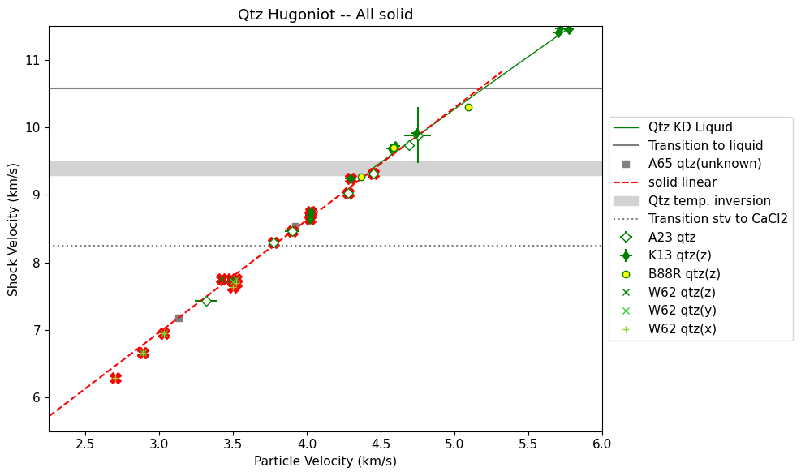
['shot27' 'shot28' 'shot44']
# calculate synthetic temperatures on stv section
# based on P-V shock points + model EOS
tmpup = np.arange(3.,4,.01)
tmpus = qtz_fit_stv0.a[0]+qtz_fit_stv0.a[1]*tmpup
tmpp = 2.65*tmpup*tmpus
tmprho = 1./( (1/2.65)*(1-tmpup/tmpus) )
plt.plot(tmprho,tmpp,'x')
plt.show()
trange = np.asarray([3130,3500,4000,4500,5000])#,5500,5900])
rrange = np.zeros(len(trange))
prange = np.zeros(len(trange))
x,y = intersection(tmprho,tmpp,stvpvt.rhoarr,stvpvt.p3130)
print(x,y)
rrange[0] = x[0]
prange[0] = y[0]
x,y = intersection(tmprho,tmpp,stvpvt.rhoarr,stvpvt.p3500)
print(x,y)
rrange[1] = x[0]
prange[1] = y[0]
x,y = intersection(tmprho,tmpp,stvpvt.rhoarr,stvpvt.p4000)
print(x,y)
rrange[2] = x[0]
prange[2] = y[0]
x,y = intersection(tmprho,tmpp,stvpvt.rhoarr,stvpvt.p4500)
print(x,y)
rrange[3] = x[0]
prange[3] = y[0]
x,y = intersection(tmprho,tmpp,stvpvt.rhoarr,stvpvt.p5000)
print(x,y)
rrange[4] = x[0]
prange[4] = y[0]
#x,y = intersection(tmprho,tmpp,stvpvt.rhoarr,stvpvt.p5500)
#print(x,y)
#rrange[4] = x[0]
#prange[4] = y[0]
#x,y = intersection(tmprho,tmpp,stvpvt.rhoarr,stvpvt.p5900)
#print(x,y)
#rrange[5] = x[0]
#prange[5] = y[0]
usrange = np.interp(prange,tmpp,tmpus)
plt.plot(usrange,trange,'x')
plt.show()
stvusmodel = usrange
stvtmodel = trange
stvpmodel = prange
# save this model for plotting
with open(figurefigpath+'stvmodel.pkl', 'wb') as f: # Python 3: open(..., 'wb')
pickle.dump([stvusmodel,stvtmodel,stvpmodel], f)
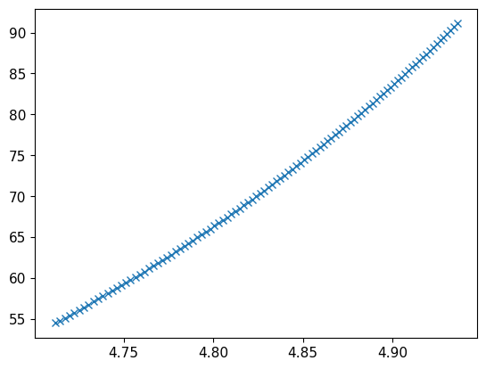
[4.7387883] [57.8388972]
[4.80142893] [66.51156301]
[4.85363197] [74.94746715]
[4.89293053] [82.16082648]
[4.92711089] [89.133893]
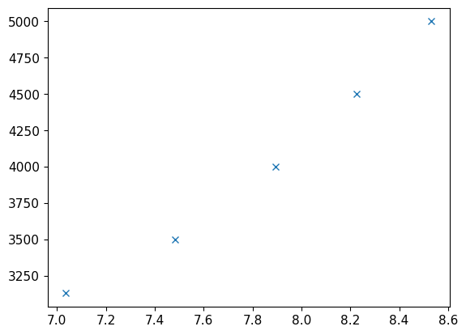
# calculate synthetic temperatures on all solid section
# based on P-V shock points + model EOS
tmpup = np.arange(3.,4.55,.01)
tmpus = qtz_fit_solid0.a[0]+qtz_fit_solid0.a[1]*tmpup
tmpp = 2.65*tmpup*tmpus
tmprho = 1./( (1/2.65)*(1-tmpup/tmpus) )
plt.plot(tmprho,tmpp,'x')
plt.show()
trange = np.asarray([3000.,3130,3500,4000,4500,5000,5500,5900])
rrange = np.zeros(len(trange))
prange = np.zeros(len(trange))
x,y = intersection(tmprho,tmpp,stvpvt.rhoarr,stvpvt.p3000)
print(x,y)
if len(x)>0:
rrange[0] = x[0]
prange[0] = y[0]
x,y = intersection(tmprho,tmpp,stvpvt.rhoarr,stvpvt.p3130)
print(x,y)
if len(x)>0:
rrange[1] = x[0]
prange[1] = y[0]
x,y = intersection(tmprho,tmpp,stvpvt.rhoarr,stvpvt.p3500)
print(x,y)
if len(x)>0:
rrange[2] = x[0]
prange[2] = y[0]
x,y = intersection(tmprho,tmpp,stvpvt.rhoarr,stvpvt.p4000)
print(x,y)
rrange[3] = x[0]
prange[3] = y[0]
x,y = intersection(tmprho,tmpp,stvpvt.rhoarr,stvpvt.p4500)
print(x,y)
rrange[4] = x[0]
prange[4] = y[0]
x,y = intersection(tmprho,tmpp,stvpvt.rhoarr,stvpvt.p5000)
print(x,y)
rrange[5] = x[0]
prange[5] = y[0]
x,y = intersection(tmprho,tmpp,stvpvt.rhoarr,stvpvt.p5500)
print(x,y)
rrange[6] = x[0]
prange[6] = y[0]
x,y = intersection(tmprho,tmpp,stvpvt.rhoarr,stvpvt.p5900)
print(x,y)
rrange[7] = x[0]
prange[7] = y[0]
usrange = np.interp(prange,tmpp,tmpus)
solidusmodel = usrange[3::]
solidtmodel = trange[3::]
plt.plot(solidusmodel,solidtmodel,'ro')
plt.plot(usrange,trange,'x')
plt.show()
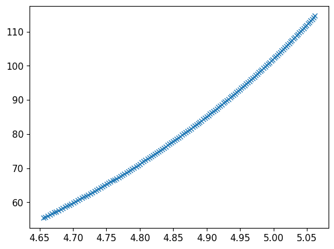
[] []
[] []
[] []
[4.72274249] [62.21453597]
[4.85188782] [78.09284821]
[4.92214492] [88.59747104]
[4.97445964] [97.46522763]
[5.00717586] [103.52737812]
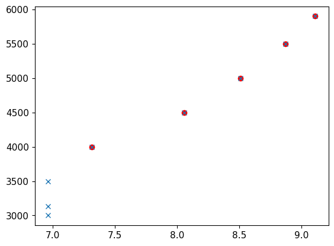
# calculate synthetic temperatures on cacl2 section
# based on P-V shock points + model EOS
print(qtz_fit_cacl20.a)
tmpup = np.arange(4.,5.5,.01)
tmpus = qtz_fit_cacl20.a[0]+qtz_fit_cacl20.a[1]*tmpup
tmpp = 2.65*tmpup*tmpus
tmprho = 1./( (1/2.65)*(1-tmpup/tmpus) )
plt.plot(tmprho,tmpp,'x')
plt.show()
#trange = np.asarray([3500,4000,4500,5000,5500,5900])
trange = np.asarray([5500,5900])
rrange = np.zeros(len(trange))
prange = np.zeros(len(trange))
plt.plot(stvpvt.rhoarr,stvpvt.p3500)
plt.plot(tmprho,tmpp),
plt.show()
if 0:
x,y = intersection(tmprho,tmpp,stvpvt.rhoarr,stvpvt.p3500)
print(x,y)
if len(x) > 1:
rrange[0] = x[0]
prange[0] = y[0]
x,y = intersection(tmprho,tmpp,stvpvt.rhoarr,stvpvt.p4000)
print(x,y)
if len(x) > 1:
rrange[1] = x[0]
prange[1] = y[0]
x,y = intersection(tmprho,tmpp,stvpvt.rhoarr,stvpvt.p4500)
print(x,y)
if len(x) > 1:
rrange[2] = x[0]
prange[2] = y[0]
x,y = intersection(tmprho,tmpp,stvpvt.rhoarr,stvpvt.p5000)
print(x,y)
if len(x) > 1:
rrange[3] = x[0]
prange[3] = y[0]
x,y = intersection(tmprho,tmpp,stvpvt.rhoarr,stvpvt.p5500)
print(x,y)
if len(x) > 1:
rrange[4] = x[0]
prange[4] = y[0]
x,y = intersection(tmprho,tmpp,stvpvt.rhoarr,stvpvt.p5900)
print(x,y)
if len(x) > 1:
rrange[5] = x[0]
prange[5] = y[0]
x,y = intersection(tmprho,tmpp,stvpvt.rhoarr,stvpvt.p5500)
print('5500',x,y)
if len(x) > 0:
rrange[0] = x[0]
prange[0] = y[0]
x,y = intersection(tmprho,tmpp,stvpvt.rhoarr,stvpvt.p5900)
print(x,y)
if len(x) > 0:
rrange[1] = x[0]
prange[1] = y[0]
print(rrange,prange)
usrange = np.interp(prange,tmpp,tmpus)
plt.plot(usrange,trange,'x')
plt.show()
cacl2usmodel = usrange
cacl2tmodel = trange
print(cacl2usmodel,cacl2tmodel)
[2.61789622 1.50630632]
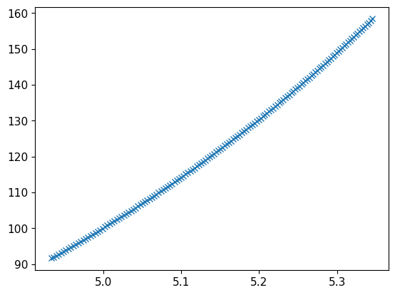
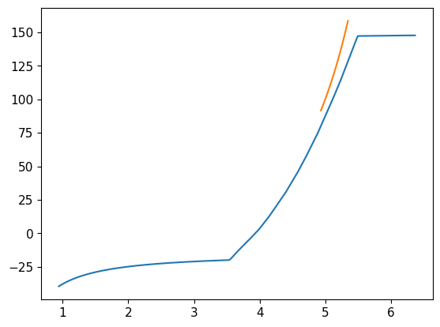
5500 [5.00472333] [100.71216986]
[5.08159436] [111.4700905]
[5.00472333 5.08159436] [100.71216986 111.4700905 ]
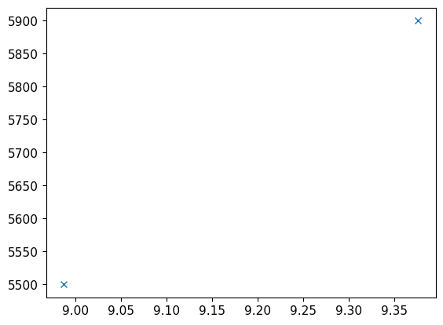
[8.98748154 9.37584595] [5500 5900]
# FIT LIQUID
if 1:
print('CACL2 region Knudsen + Amodeo + 1 Boslough')
inda = np.where((shockdat_list[A23qtz['id']].up>3.6) & (shockdat_list[A23qtz['id']].up>4.55) & (shockdat_list[A23qtz['id']].exp_id != 'shot44') & (shockdat_list[A23qtz['id']].exp_id != 'shot28')) [0]
print(shockdat_list[A23qtz['id']].exp_id[inda])
indk = np.where((shockdat_list[K13qtz['id']].up>4.55))[0]
indb = np.where(shockdat_list[B88RRqtz['id']].orientation == 'z')[0][1:3]
fitupstv1 = [shockdat_list[K13qtz['id']].up[indk],shockdat_list[A23qtz['id']].up[inda],shockdat_list[B88RRqtz['id']].up[indb]]
fitupstv = np.concatenate([np.atleast_1d(x) for x in fitupstv1])
fituperrstv1 = [shockdat_list[K13qtz['id']].up_std[indk],shockdat_list[A23qtz['id']].up_std[inda],shockdat_list[B88RRqtz['id']].up_std[indb]]
fituperrstv = np.concatenate([np.atleast_1d(x) for x in fituperrstv1])
fitusstv1 = [shockdat_list[K13qtz['id']].us[indk],shockdat_list[A23qtz['id']].us[inda],shockdat_list[B88RRqtz['id']].us[indb]]
fitusstv = np.concatenate([np.atleast_1d(x) for x in fitusstv1])
fituserrstv1 = [shockdat_list[K13qtz['id']].us_std[indk],shockdat_list[A23qtz['id']].us_std[inda],shockdat_list[B88RRqtz['id']].us_std[indb]]
fituserrstv = np.concatenate([np.atleast_1d(x) for x in fituserrstv1])
r1 = np.full(len(indk), shockdat_list[K13qtz['id']].refidlist[1], dtype=int)
r2 = np.full(len(inda), shockdat_list[A23qtz['id']].refidlist[1], dtype=int)
r3 = np.full(len(indb), shockdat_list[B88RRqtz['id']].refidlist[1], dtype=int)
fitqtzrefid2 = np.concatenate((r1,r2,r3))
fitqtzreflist2=[]
for i in np.unique(fitqtzrefid2):
fitqtzreflist2.append(str(i)+': '+ref_list[i].reference[0])
# use new fitting system
print('HPEOS T-Us FIT LIQUID REGION')
# initialize the HPeos_Fit class
qtz_fit_liq = hp.HPeos_Fit()
qtz_fit_liq.matid = 174
qtz_fit_liq.material = 'Quartz'
qtz_fit_liq.formula = 'SiO2'
qtz_fit_liq.rho_ref = 2.650
qtz_fit_liq.rho_ref_units = 'g/cm³'
qtz_fit_liq.x = fitupstv
qtz_fit_liq.f = fitusstv
qtz_fit_liq.x_std = fituperrstv
qtz_fit_liq.f_std = fituserrstv
qtz_fit_liq.refid = fitqtzrefid2
qtz_fit_liq.reflist = fitqtzreflist2
qtz_fit_liq.x_var = 'up'
qtz_fit_liq.f_var = 'us'
qtz_fit_liq.x_units = 'km/s'
qtz_fit_liq.f_units = 'km/s'
qtz_fit_liq.x_desc = 'Particle Velocity'
qtz_fit_liq.f_desc = 'Shock Velocity'
qtz_fit_liq.phase_fit = 'liquid'
qtz_fit_liq.remlist.append('Fit to liquid region on the Hugoniot including the metastable shock fronts below the melt curve.')
qtz_fit_liq.remlist.append('Only including z-cut alpha-quartz.')
qtz_fit_liq.remlist.append('Did not include Lyzenga et al. JGR 1983 (refid=285) and Boslough JGR 1988 (refid=300) points that lack impedance match information.')
DateTime_in_ISOFormat = datetime.datetime.now(zoneinfo.ZoneInfo('UTC')).isoformat('T', 'seconds') #
qtz_fit_liq.actions = [['Sarah T. Stewart','create',DateTime_in_ISOFormat,'new fit']]
qtz_fit_liq.curvetype = 'cubic'
qtz_fit_liq.outputfitpath = outputfitpath # in load_paths.py
qtz_fit_liq.filename = 'qtz_fit_liq_cubic'
qtz_fit_liq.fit()
print('FIT EOS a = ',qtz_fit_liq.a)
print('FIT EOS cov = ',qtz_fit_liq.cov)
qtz_fit_liq.savejson()
qtz_fit_liq.savereadable()
print('rms = ',qtz_fit_liq.rms)
print('qtz_fit_liq check:')
qtz_fit_liq.comparecoefs(qtz_fit_liq0.a)
nup = np.arange(.8*qtz_fit_liq.xrange[0],1.2*qtz_fit_liq.xrange[1],.04)
nus = qtz_fit_liq.calcf(nup)
#plt.plot(nup,nus,'r-',label='liq cubic')
resstvinit = np.polyfit(fitupstv,fitusstv,3)
data = RealData(fitupstv, fitusstv, sx=fituperrstv, sy=fituserrstv)
odr = ODR(data, cubic_model, beta0=resstvinit) # Initial guess: slope=1, intercept=0
output=odr.run()
resliq = output.beta
covliq = output.cov_beta
print('LIQUID ODR cubic fit = ',resliq)
print(covliq)
print('number of points=',len(fitupstv))
yyy = resliq[3]+resliq[2]*fitupstv + resliq[1]*fitupstv*fitupstv+resliq[0]*fitupstv*fitupstv*fitupstv
dy = yyy-fitusstv
rms = np.sqrt(np.mean(dy**2))
print('ODR cubic rms = ',rms)
fitup3 = np.arange(3,20,.01)
fitus3 = resliq[3]+resliq[2]*fitup3 + resliq[1]*fitup3*fitup3+resliq[0]*fitup3*fitup3*fitup3
if 1:
resstvinit = np.polyfit(fitupstv,fitusstv,2)
data = RealData(fitupstv, fitusstv, sx=fituperrstv, sy=fituserrstv)
odr = ODR(data, quadratic_model, beta0=resstvinit) # Initial guess: slope=1, intercept=0
output=odr.run()
resliq = output.beta
covliq = output.cov_beta
print('LIQUID ODR quadratic fit = ',resliq)
print(covliq)
print('number of points=',len(fitupstv))
print('min, max up=',min(fitupstv),max(fitupstv))
yyy = resliq[2]+resliq[1]*fitupstv + resliq[0]*fitupstv*fitupstv #+resliq[0]*fitupstv*fitupstv*fitupstv
dy = yyy-fitusstv
rms = np.sqrt(np.mean(dy**2))
print('ODR quadratic rms = ',rms)
fitup2 = np.arange(3,20,.01)
fitus2 = resliq[2]+resliq[1]*fitup2 + resliq[0]*fitup2*fitup2 #+resliq[0]*fitup*fitup*fitup
fig = plt.figure(figsize=(10, 6))
plt.plot(nup,nus,'r-',label='liq cubic')
#ind = np.where(qtz_hug_liq.P>110)[0]
#plt.plot(qtz_hug_liq.up[ind],qtz_hug_liq.us[ind],'g-',linewidth=1,label='Qtz KD Liquid')
plt.plot([0,20],[qtz_startliq_us,qtz_startliq_us],'-',color='grey',label='Transition to liquid')
inda = np.where((shockdat_list[A23qtz['id']].up > 4.55) & (shockdat_list[A23qtz['id']].exp_id != 'shot44') & (shockdat_list[A23qtz['id']].exp_id != 'shot28'))[0]
plt.errorbar(shockdat_list[A23qtz['id']].up[inda],shockdat_list[A23qtz['id']].us[inda],fmt='gD',mfc='white',label=A23qtz['lab'],\
xerr=shockdat_list[A23qtz['id']].up_std[inda],yerr=shockdat_list[A23qtz['id']].us_std[inda])
indk = np.where((shockdat_list[K13qtz['id']].up > 4.55))[0]
plt.errorbar(shockdat_list[K13qtz['id']].up[indk],shockdat_list[K13qtz['id']].us[indk],fmt='gd',markersize=6,\
xerr=shockdat_list[K13qtz['id']].up_std[indk],yerr=shockdat_list[K13qtz['id']].us_std[indk],label=K13qtz['lab']+'(z)')
ind = np.where(shockdat_list[B88RRqtz['id']].orientation == 'z')[0][1:3]
plt.errorbar(shockdat_list[B88RRqtz['id']].up[ind],shockdat_list[B88RRqtz['id']].us[ind],fmt='go',mfc='yellow',\
label=B88RRqtz['lab']+'(z)')
plt.fill_between([0,20],[qtz_wiggle_us1,qtz_wiggle_us1],[qtz_wiggle_us2,qtz_wiggle_us2],color='lightgrey',label='Qtz temp. inversion')
plt.plot([0,20],[qtz_trans_cacl2_us,qtz_trans_cacl2_us],':',color='grey',label='Transition stv to CaCl2')
plt.ylim(5.5,35)
plt.xlim(2.25,25.)
plt.plot(fitup3,fitus3,'g--')
#plt.plot(fitup2,fitus2,'r:')
plt.legend(loc='center left', bbox_to_anchor=(1, 0.5))
plt.xlabel('Particle Velocity (km/s)')
plt.ylabel('Shock Velocity (km/s)')
plt.title('Qtz Hugoniot Fits')
plt.tight_layout()
plt.show()
fig = plt.figure(figsize=(10, 6))
plt.plot(nup,nus,'r-',label='liq cubic')
#ind = np.where(qtz_hug_liq.P>110)[0]
#plt.plot(qtz_hug_liq.up[ind],qtz_hug_liq.us[ind],'g-',linewidth=1,label='Qtz KD Liquid')
plt.plot([0,20],[qtz_startliq_us,qtz_startliq_us],'-',color='grey',label='Transition to liquid')
inda = np.where((shockdat_list[A23qtz['id']].up > 4.55) & (shockdat_list[A23qtz['id']].exp_id != 'shot44') & (shockdat_list[A23qtz['id']].exp_id != 'shot28'))[0]
plt.errorbar(shockdat_list[A23qtz['id']].up[inda],shockdat_list[A23qtz['id']].us[inda],fmt='gD',mfc='white',label=A23qtz['lab'],\
xerr=shockdat_list[A23qtz['id']].up_std[inda],yerr=shockdat_list[A23qtz['id']].us_std[inda])
indk = np.where((shockdat_list[K13qtz['id']].up > 4.55))[0]
plt.errorbar(shockdat_list[K13qtz['id']].up[indk],shockdat_list[K13qtz['id']].us[indk],fmt='gd',markersize=6,\
xerr=shockdat_list[K13qtz['id']].up_std[indk],yerr=shockdat_list[K13qtz['id']].us_std[indk],label=K13qtz['lab']+'(z)')
ind = np.where(shockdat_list[B88RRqtz['id']].orientation == 'z')[0][1:3]
plt.errorbar(shockdat_list[B88RRqtz['id']].up[ind],shockdat_list[B88RRqtz['id']].us[ind],fmt='go',mfc='yellow',\
label=B88RRqtz['lab']+'(z)')
plt.fill_between([0,20],[qtz_wiggle_us1,qtz_wiggle_us1],[qtz_wiggle_us2,qtz_wiggle_us2],color='lightgrey',label='Qtz temp. inversion')
plt.plot([0,20],[qtz_trans_cacl2_us,qtz_trans_cacl2_us],':',color='grey',label='Transition stv to CaCl2')
plt.ylim(7,20)
plt.xlim(3,12.)
#plt.plot(fitup,resliq[3]+resliq[2]*fitup + resliq[1]*fitup*fitup+resliq[0]*fitup*fitup*fitup,'g--')
plt.plot(fitup3,fitus3,'g--')
#plt.plot(fitup2,fitus2,'r:')
plt.legend(loc='center left', bbox_to_anchor=(1, 0.5))
plt.xlabel('Particle Velocity (km/s)')
plt.ylabel('Shock Velocity (km/s)')
plt.title('Qtz Hugoniot Fits')
plt.tight_layout()
plt.show()
ind = np.where(shockdat_list[A23qtz['id']].up<3.6)[0]
print(shockdat_list[A23qtz['id']].exp_id[ind])
CACL2 region Knudsen + Amodeo + 1 Boslough
['shot26' 'shot33']
HPEOS T-Us FIT LIQUID REGION
FIT EOS a = [ 1.75601795e+00 1.84956245e+00 -3.17458138e-02 4.97145666e-04]
FIT EOS cov = [[ 1.61128022e-02 -4.71961658e-03 4.27549341e-04 -1.21491728e-05]
[-4.71961658e-03 1.42389771e-03 -1.31805531e-04 3.80830655e-06]
[ 4.27549341e-04 -1.31805531e-04 1.24191015e-05 -3.64240673e-07]
[-1.21491728e-05 3.80830655e-06 -3.64240673e-07 1.08307156e-08]]
Saved EOS fit in qtz_fit_liq_cubic.txt
Saved EOS fit in readable file qtz_fit_liq_cubic-readable.txt
rms = 0.09956970253786962
qtz_fit_liq check:
Coefficients are the same.
[ 1.75601795e+00 1.84956245e+00 -3.17458138e-02 4.97145666e-04]
[ 1.75601795e+00 1.84956245e+00 -3.17458138e-02 4.97145666e-04]
LIQUID ODR cubic fit = [ 4.97148511e-04 -3.17459054e-02 1.84956335e+00 1.75601530e+00]
[[ 1.08305644e-08 -3.64235245e-07 3.80824434e-06 -1.21489566e-05]
[-3.64235245e-07 1.24189066e-05 -1.31803295e-04 4.27541552e-04]
[ 3.80824434e-06 -1.31803295e-04 1.42387201e-03 -4.71952679e-03]
[-1.21489566e-05 4.27541552e-04 -4.71952679e-03 1.61124874e-02]]
number of points= 211
ODR cubic rms = 0.09956968501876873
LIQUID ODR quadratic fit = [-0.01494336 1.67307275 2.32140758]
[[ 1.63263578e-07 -3.59812122e-06 1.83021115e-05]
[-3.59812122e-06 8.19774195e-05 -4.33180843e-04]
[ 1.83021115e-05 -4.33180843e-04 2.40864850e-03]]
number of points= 211
min, max up= 4.571511523 19.85356093
ODR quadratic rms = 0.10523787166327846
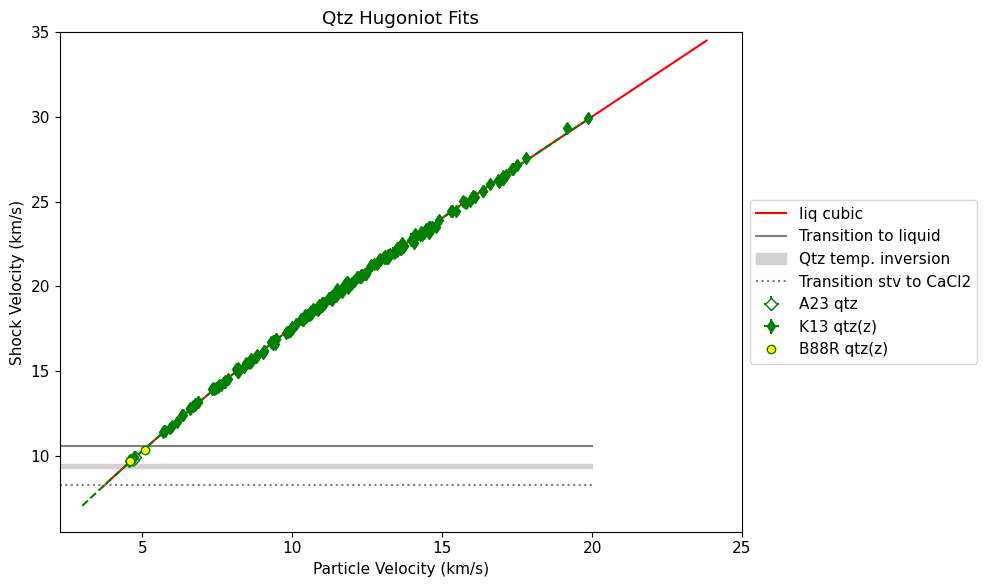
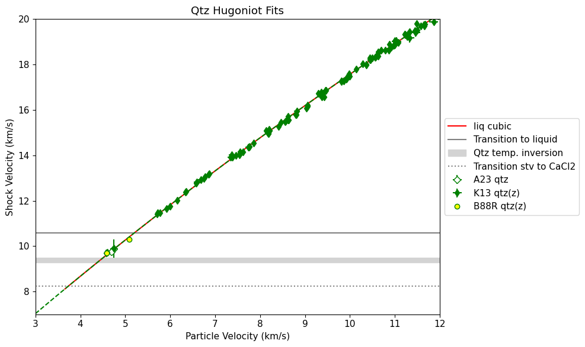
['shot27' 'shot28' 'shot44']
print(shockdat_list[K13qtz['id']].rho_std)
[0.04399988 0.04294756 0.04258048 0.04521581 0.04053482 0.04067165
0.04493477 0.03958338 0.04036226 0.0392091 0.04405252 0.04416386
0.03911546 0.03913424 0.06183477 0.06161612 0.06176932 0.06277932
0.04187729 0.04218766 0.04209119 0.06068718 0.04177903 0.04131814
0.06191412 0.05976167 0.06168581 0.06185488 0.06223706 0.04272386
0.0418874 0.06207319 0.04010253 0.06129614 0.04076936 0.040968
0.04039129 0.0419007 0.04256517 0.04007343 0.06236953 0.06016802
0.06209287 0.04307361 0.06028571 0.04024831 0.03974824 0.04234484
0.03992009 0.04143564 0.03823234 0.04019343 0.03900231 0.04014377
0.03937773 0.03778424 0.03979206 0.04038471 0.0407 0.0383296
0.03894432 0.03874295 0.03825807 0.03811738 0.03857976 0.03953463
0.03934817 0.04197632 0.0382668 0.03899769 0.03757021 0.03765131
0.03733253 0.03724436 0.03879025 0.037666 0.03753686 0.03756643
0.03801967 0.03753409 0.03841731 0.04636603 0.03750568 0.03853735
0.04581872 0.03786361 0.04010525 0.03877538 0.04135872 0.03954829
0.14234689 0.03873721 0.15079861 0.03782882 0.03675089 0.03677177
0.0366122 0.03717239 0.14954775 0.03668614 0.0368484 0.03752153
0.03788289 0.06557262 0.03958307 0.03738397 0.03772835 0.03777705
0.10330228 0.03792739 0.03813938 0.04020266 0.03792018 0.03855442
0.03831843 0.03812616 0.03764187 0.06432388 0.09522359 0.03716804
0.0381898 0.038001 0.03900963 0.03807432 0.03693133 0.03734929
0.037374 0.03831768 0.04208187 0.03819382 0.09821798 0.06167541
0.06280384 0.18591951 0.03735393 0.03686762 0.03672227 0.03862772
0.04223082 0.03732025 0.03806324 0.09675304 0.03703693 0.03699215
0.03788673 0.06389703 0.09583486 0.03851085 0.09725909 0.03908377
0.0644583 0.03857681 0.09819737 0.19322535 0.03958727 0.03911076
0.0641257 0.20265473 0.03869096 0.17839579 0.12964988 0.03881351
0.09768969 0.03936948 0.03996443 0.09441933 0.10045005 0.13120281
0.1049075 0.04051586 0.0652373 0.1793525 0.03925867 0.07223153
0.04688805 0.04562522 0.03975208 0.04757211 0.04007757 0.04128993
0.05025745 0.04109636 0.0423226 0.04260991 0.04156858 0.04069128
0.07367106 0.04391688 0.04383602 0.20191431 0.05005025 0.04901616
0.1045724 0.04587213 0.10172092 0.0778388 0.07683091 0.0487591
0.04908791 0.04953612 0.06790386 0.07192083 0.04402101 0.04189691
0.04162855 0.04083491 0.04018043 0.03929786 0.03948333 0.04322707
0.04194251]
fig = plt.figure(figsize=(10, 6))
widthsol=4
# plot liquidus
ind = np.where(stsmcsmooth.rho < 5.65)[0]
ind = np.where(stsmcsmooth.rho > 0)[0]
plt.plot(stsmcsmooth.rho[ind],stsmcsmooth.P[ind],'-',color=mc_col,linewidth=widthsol,label='Proposed liquidus')
ind = np.where((stsmcsmooth.rho_s < 5.65) & (stsmcsmooth.rho_s > 0))[0]
plt.plot(stsmcsmooth.rho_s[ind],stsmcsmooth.P[ind],'-',color=sol_col,linewidth=widthsol,label='Proposed solidus')
plt.errorbar(shockdat_list[K13qtz['id']].rho,shockdat_list[K13qtz['id']].P,fmt='gd',markersize=6,\
xerr=shockdat_list[K13qtz['id']].rho_std,yerr=shockdat_list[K13qtz['id']].P_std,label=K13qtz['lab']+'(z)')
#indhigh = np.where(fsdf['P'][indfs] > 74)[0]
#plt.errorbar(shockdat_list[W62qtz['id']].rho,shockdat_list[W62qtz['id']].P,fmt='gx',label=W62qtz['lab'])
#plt.errorbar(shockdat_list[W62fs['id']].rho,shockdat_list[W62fs['id']].P,fmt='bx',label=W62fs['lab'])
#plt.errorbar(shockdat_list[L83fshug['id']].rho,shockdat_list[L83fshug['id']].P,fmt='bo',label=L83fshug['lab'])
#plt.errorbar(fsdf['rho'][indfs],fsdf['P'][indfs],fmt='b+',label='M80 FS')
#plt.errorbar(qtzdf['rho'][indqtz],qtzdf['P'][indqtz],fmt='+',color='grey',label='Rusbank qtz excluded')
#indhigh = np.where((qtzdf['P'][indqtz] > 74) & (qtzdf['P'][indqtz] < 100))[0]
#print(indhigh)
#plt.errorbar(qtzdf['rho'][indqtz][indhigh],qtzdf['P'][indqtz][indhigh],fmt='g+',label='M80 qtz')
#mqtzup = deepcopy(np.asarray(qtzdf['up'][indqtz]))
#mqtzus = deepcopy(np.asarray(qtzdf['us'][indqtz]))
#mqtzrho = deepcopy(np.asarray(qtzdf['rho'][indqtz]))
#mqtzP = deepcopy(np.asarray(qtzdf['P'][indqtz]))
#inda = np.where((mqtzus>8) & (mqtzus<9.23))[0]
#plt.errorbar(mqtzrho[inda],mqtzP[inda],fmt='g+',label='M80 qtz included')
#plt.errorbar(shockdat_list[L83qtzhug['id']].rho,shockdat_list[L83qtzhug['id']].P,fmt='o',color='grey',mfc='white',\
# yerr=shockdat_list[L83qtzhug['id']].P_std,xerr=shockdat_list[L83qtzhug['id']].rho_std,label=L83qtzhug['lab']+'(mult)')
#plt.errorbar(shockdat_list[W62qtz['id']].rho,shockdat_list[W62qtz['id']].P,fmt='gx',label=W62qtz['lab'],\
# xerr=shockdat_list[W62qtz['id']].rho_std,yerr=shockdat_list[W62qtz['id']].P_std)
ind = np.where(shockdat_list[W62qtz['id']].orientation==' z')[0]
plt.errorbar(shockdat_list[W62qtz['id']].rho[ind],shockdat_list[W62qtz['id']].P[ind],\
xerr=shockdat_list[W62qtz['id']].rho_std[ind],fmt='gx',label=W62qtz['lab']+'(z)')
ind = np.where(shockdat_list[W62qtz['id']].orientation==' y')[0]
plt.errorbar(shockdat_list[W62qtz['id']].rho[ind],shockdat_list[W62qtz['id']].P[ind],\
xerr=shockdat_list[W62qtz['id']].rho_std[ind],fmt='x',color='limegreen',label=W62qtz['lab']+'(y)')
ind = np.where(shockdat_list[W62qtz['id']].orientation==' x')[0]
plt.errorbar(shockdat_list[W62qtz['id']].rho[ind],shockdat_list[W62qtz['id']].P[ind],\
xerr=shockdat_list[W62qtz['id']].rho_std[ind],fmt='X',color='yellowgreen',label=W62qtz['lab']+'(x)')
plt.errorbar(shockdat_list[A23qtz['id']].rho,shockdat_list[A23qtz['id']].P,fmt='gD',mfc='white',label=A23qtz['lab'],\
xerr=shockdat_list[A23qtz['id']].rho_std,yerr=shockdat_list[A23qtz['id']].P_std)
plt.errorbar(shockdat_list[T20qtz['id']].rho,shockdat_list[T20qtz['id']].P,fmt='<',mfc='white',color='grey',\
xerr = shockdat_list[T20qtz['id']].rho_std, yerr=shockdat_list[T20qtz['id']].P_std, label=T20qtz['lab']+'(excl)')
#print(shockdat_list[T20qtz['id']].up,shockdat_list[T20qtz['id']].us)
#res = np.polyfit(shockdat_list[T20qtz['id']].up,shockdat_list[T20qtz['id']].us,1)
#print(res)
plt.errorbar(shockdat_list[L04qtz['id']].rho,shockdat_list[L04qtz['id']].P,fmt='gv',mfc='yellowgreen',\
xerr=shockdat_list[L04qtz['id']].rho_std,yerr=shockdat_list[L04qtz['id']].P_std,label=L04qtz['lab']+'(x)')
#plt.errorbar(shockdat_list[B88RRqtz['id']].rho,shockdat_list[B88RRqtz['id']].P,fmt='go',mfc='red',\
# yerr=shockdat_list[B88RRqtz['id']].P_std,label=B88RRqtz['lab'])
ind = np.where(np.asarray(shockdat_list[B88RRqtz['id']].orientation) == 'z')[0]
plt.errorbar(shockdat_list[B88RRqtz['id']].rho[ind],shockdat_list[B88RRqtz['id']].P[ind],fmt='go',mfc='yellow',\
label=B88RRqtz['lab']+'(z)')
ind = np.where(np.asarray(shockdat_list[B88RRqtz['id']].orientation) == 'pz')[0]
plt.errorbar(shockdat_list[B88RRqtz['id']].rho[ind],shockdat_list[B88RRqtz['id']].P[ind],fmt='go',mfc='orange',\
label=B88RRqtz['lab']+'(pz)')
ind = np.where(qtz_hug_liq.P>111)[0]
#ind = np.where(qtz_hug_liq.P>qtz_p_startliq)[0]
plt.plot(qtz_hug_liq.rho[ind],qtz_hug_liq.P[ind],'g--',linewidth=1,label='KD liq fit')
#ind2 = np.where((qtz_hug_glass.us > qtz_wiggle_us2) & (qtz_hug_glass.us <qtz_startliq_us))[0]
#plt.plot(qtz_hug_glass.rho[ind2],qtz_hug_glass.P[ind2],'-',color='springgreen',linewidth=3,label='Metastable region')
# Altshuler
palt = 2.65*np.asarray([3.13,3.92,6.2])*np.asarray([7.18,8.54,12.01])
#print('palt = ',palt)
rhoalt = 1./((1./2.65)*(1.-np.asarray([3.13,3.92,6.2])/np.asarray([7.18,8.54,12.01])))
plt.plot(rhoalt,palt,'g>',label='A65 qtz(?)')
# Fit CaCl2 region on the qtz Hugoniot
#plt.plot([0,10],[116.,116])
#print(shockdat_list[W62fs['id']].P)
#print(shockdat_list[L83fshug['id']].P)
#tmp = np.where(fitqtzcparr < 120)[0]
#plt.plot(fitqtzcrarr[tmp],fitqtzcparr[tmp],'g--',linewidth=3,label=r'Solid region fits')
#tmp = np.where(fitqtznparr < 68)[0]
#plt.plot(fitqtznrarr[tmp],fitqtznparr[tmp],'g--')
# plot new qtz data points from UCD gas gun lab
# Shots 47,48,44
#plt.plot([4.945,5.03885,5.078762118],[84.709,102.44,109.866],'rP',label='New qtz(z)') # MG release
#plt.plot([4.917,5.008],[84.153,101.7557],'rX',label='Shots 47,48 FLHUG')
#plt.plot([shot33.rho,shot26.rho,shot47.rho,shot48.rho,shot44.rho,shot45.rho],[shot33.P,shot26.P,shot47.P,shot48.P,shot44.P,shot45.P],'rP',label='New qtz(z)') # MG release
#plt.errorbar([shot33.rho],[shot33.P],xerr=[.0244*2],yerr=[0.476],label='New qtz(z)') # MG release
# shot 33
#plt.plot(shot33.rho,shot33.P,'rD',label='Shot 33')
# shot 26
#plt.plot(shot26.rho,shot26.P,'cD',label='Shot 26')
#plt.plot([4,8],[35,35],color='orange',label='FS trans to stv')
#plt.plot([4,5.5],[66,66],color='grey',label='Omega wiggle FS')
#plt.plot([4,5.5],[71,71],'--',color='grey')
#plt.plot([4,5.5],[79.4,79.4],color='grey')
plt.plot([0,20],[qtz_trans_cacl2_P,qtz_trans_cacl2_P],color='grey',label='Trans CaCl2') # stv enters melt curve
plt.fill_between([qtz_wiggle_rho1,qtz_wiggle_rho2],[qtz_wiggle_P1,qtz_wiggle_P1],[qtz_wiggle_P2,qtz_wiggle_P2],color='grey',alpha=0.8,label='Temp.inversion')
#plt.plot([4.,8],[108,108],color='tan',label='Omega wiggle qtz')
#plt.plot([4.,8],[112,112],color='tan')
#plt.plot([4.,58],[liqpmin,liqpmin],color='red',label='Qtz enters liquid')
#plt.plot(qtz_hug_sft.rho,qtz_hug_sft.P,'r-',linewidth=2,label='sft region fit')
#plt.plot([4,5],[80,80],color='red',label='sound speed melting')
plt.ylim(20,250)
plt.xlim(4.4,5.7)
#plt.ylim(20,500)
#plt.xlim(4.2,6.5)
#plt.plot(qtz_hug_stv.rho,qtz_hug_stv.P,'g-')
#plt.plot(qtz_hug_cacl2.rho,qtz_hug_cacl2.P,'g:')
plt.plot(qtz_hug_solid.rho,qtz_hug_solid.P,'g-')
plt.legend(loc='center left', bbox_to_anchor=(1, 0.5))
plt.xlabel(r'Density (g/cm$^3$)')
plt.ylabel('Pressure (GPa)')
#plt.title('Qtz Hugoniot')
figname='H6-qtz-rho-P'
plt.tight_layout()
plt.savefig(outputfigpath+figname+'.pdf')
plt.show()
qtz_wiggle_us1 = 9.29 # km/s
qtz_wiggle_us2 = 9.5 # km/s
qtz_wiggle_P1 = np.interp(qtz_wiggle_us1,qtz_hug_cacl2.us,qtz_hug_cacl2.P)
qtz_wiggle_up1 = np.interp(qtz_wiggle_us1,qtz_hug_cacl2.us,qtz_hug_cacl2.up)
qtz_wiggle_rho1 = np.interp(qtz_wiggle_us1,qtz_hug_cacl2.us,qtz_hug_cacl2.rho)
qtz_wiggle_P2 = np.interp(qtz_wiggle_us2,qtz_hug_liq.us,qtz_hug_liq.P)
qtz_wiggle_up2 = np.interp(qtz_wiggle_us2,qtz_hug_liq.us,qtz_hug_liq.up)
qtz_wiggle_rho2 = np.interp(qtz_wiggle_us2,qtz_hug_liq.us,qtz_hug_liq.rho)
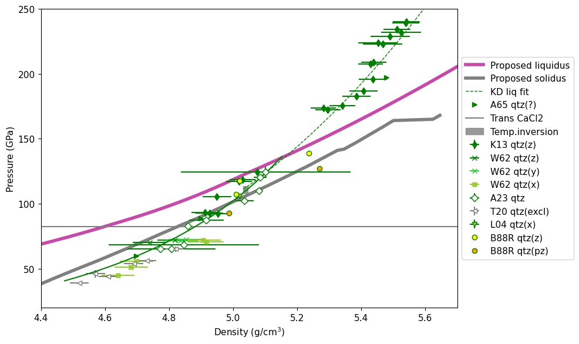
Fig. 22 Hugoniot fits for \(\alpha\)-quartz. Note that different points are in different crystal orientations. There is indication of a multi-wave structure near 71-72 GPa (dashed line) corresponding to the stishovite to CaCl\(_2\) transition on the Hugoniot. The thermal inversion feature is approximately 109 to 118 GPa.#
Note the B88R point at 127 GPa that is most compressed (5.27 g/cm\(^3\)) was cut perpendicular to the z-axis (pz). All data points in the seifertite region need to be re-analyzed with the phase transition to derive the correct density.
Perhaps coincidentally the data from Tracy et al. [2020] fall on the fitted Hugoniot (left pointing triangles). These data were interpreted as the d-NiAs structure.
The steep sft region fit is empirical to attain 4800 K in the seifertite stability field in P-V space.
Temperature Fits#
pind=4
%run -i scripts/PTphasediagram.py
RES b= [ 173.75113152 -18503.2972858 ]
4000 K pressure = 113.4110155408729
RES a= [ 168.39552949 -9390.03914284]
4000 K pressure = 62.82706956833862
figsize= [6.4, 4.8]
Saved figure: A3-SiO2-PTphase-diagram-with-qtz.pdf
<Figure size 1000x600 with 0 Axes>
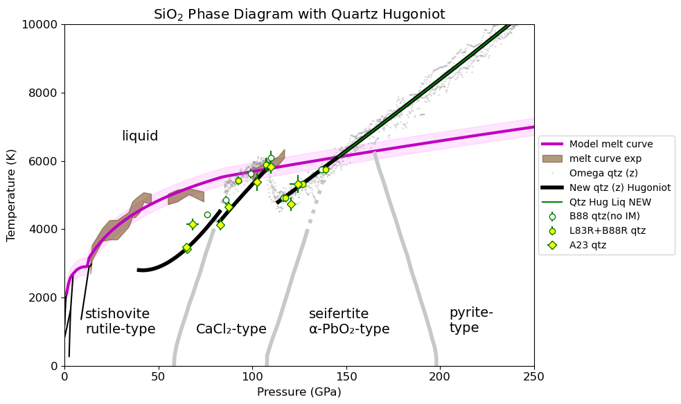
#plt.errorbar(shockdat_list[B88qtz['id']].us,shockdat_list[B88qtz['id']].T,fmt='go',mfc='white',yerr=shockdat_list[B88qtz['id']].T_std,label=B88qtz['lab']+'(mult cuts)')
#plt.errorbar(shockdat_list[S81qtz['id']].us,shockdat_list[S81qtz['id']].T,fmt='gx',label=S81qtz['lab']+'(unkwn)')
ind = np.where(shockdat_list[B88RRqtz['id']].orientation == 'z')[0]
plt.errorbar(shockdat_list[B88RRqtz['id']].us[ind],shockdat_list[B88RRqtz['id']].T[ind],fmt='go',mfc='yellow',\
label=B88RRqtz['lab']+'(z)')
#ind = np.where(shockdat_list[B88RRqtz['id']].orientation == 'pz')[0]
#plt.errorbar(shockdat_list[B88RRqtz['id']].us[ind],shockdat_list[B88RRqtz['id']].T[ind],fmt='go',mfc='orange',\
# label=B88RRqtz['lab']+'(pz)')
plt.errorbar(shockdat_list[A23qtz['id']].us,shockdat_list[A23qtz['id']].T,fmt='gD',mfc='white',label=A23qtz['lab'],\
xerr=shockdat_list[A23qtz['id']].us_std,yerr=shockdat_list[A23qtz['id']].T_std)
#plt.plot(qtz_hug_cacl2.P,qtz_hug_cacl2.T,'g--',label='CaCl2 branch Hugoniot fit')
#plt.plot(qtz_hug_liq.P,qtz_hug_liq.T,'r-',label='Liquid branch Hugoniot (Z data fit)')
if 1:
print('CACL2 region T-Us Amodeo + 1 Boslough')
inda = np.where((shockdat_list[A23qtz['id']].us>8.2) & (shockdat_list[A23qtz['id']].us<9.4) & (shockdat_list[A23qtz['id']].exp_id != 'shot44') & (shockdat_list[A23qtz['id']].exp_id != 'shot28'))[0]
print('inda=',shockdat_list[A23qtz['id']].exp_id[inda])
indb = np.where((shockdat_list[B88RRqtz['id']].us>8.2) & (shockdat_list[B88RRqtz['id']].us<9.4) & (shockdat_list[B88RRqtz['id']].orientation == 'z'))[0]
print('indb=',indb)
fitupstv1 = [np.asarray(shockdat_list[A23qtz['id']].us)[inda],shockdat_list[B88RRqtz['id']].us[indb]]
fitupstv = np.concatenate([np.atleast_1d(x) for x in fitupstv1])
fituperrstv1 = [np.asarray(shockdat_list[A23qtz['id']].us_std)[inda],shockdat_list[B88RRqtz['id']].us_std[indb]]
fituperrstv = np.concatenate([np.atleast_1d(x) for x in fituperrstv1])
fitusstv1 = [np.asarray(shockdat_list[A23qtz['id']].T)[inda],shockdat_list[B88RRqtz['id']].T[indb]]
fitusstv = np.concatenate([np.atleast_1d(x) for x in fitusstv1])
fituserrstv1 = [np.asarray(shockdat_list[A23qtz['id']].T_std)[inda],shockdat_list[B88RRqtz['id']].T_std[indb]]
fituserrstv = np.concatenate([np.atleast_1d(x) for x in fituserrstv1])
r1 = np.full(len(inda), shockdat_list[A23qtz['id']].refidlist[1], dtype=int)
r2 = np.full(1, shockdat_list[B88RRqtz['id']].refidlist[1], dtype=int)
fitqtzrefid2 = np.concatenate((r1,r2))
fitqtzreflist2=[]
for i in np.unique(fitqtzrefid2):
fitqtzreflist2.append(str(i)+': '+ref_list[i].reference[0])
print(shockdat_list[A23qtz['id']].us[inda])
print(fitusstv1)
plt.plot(fitupstv,fitusstv,'rX')
print(fitupstv,fitusstv)
print('HPEOS T-Us FIT CACL2 REGION')
# initialize the HPeos_Fit class
qtz_fitTus_cacl2 = hp.HPeos_Fit()
qtz_fitTus_cacl2.matid = 174
qtz_fitTus_cacl2.material = 'Quartz'
qtz_fitTus_cacl2.formula = 'SiO2'
qtz_fitTus_cacl2.rho_ref = 2.650
qtz_fitTus_cacl2.rho_ref_units = 'g/cm³'
qtz_fitTus_cacl2.x = fitupstv
qtz_fitTus_cacl2.f = fitusstv
qtz_fitTus_cacl2.x_std = fituperrstv
qtz_fitTus_cacl2.f_std = fituserrstv
qtz_fitTus_cacl2.refid = fitqtzrefid2
qtz_fitTus_cacl2.reflist = fitqtzreflist2
qtz_fitTus_cacl2.x_var = 'us'
qtz_fitTus_cacl2.f_var = 'T'
qtz_fitTus_cacl2.x_units = 'km/s'
qtz_fitTus_cacl2.f_units = 'K'
qtz_fitTus_cacl2.x_desc = 'Shock Velocity'
qtz_fitTus_cacl2.f_desc = 'Temperature'
qtz_fitTus_cacl2.phase_fit = 'CaCl2'
qtz_fitTus_cacl2.remlist.append('Fit to CaCl2-type region on the Hugoniot.')
DateTime_in_ISOFormat = datetime.datetime.now(zoneinfo.ZoneInfo('UTC')).isoformat('T', 'seconds') #
qtz_fitTus_cacl2.actions = [['Sarah T. Stewart','create',DateTime_in_ISOFormat,'new fit']]
qtz_fitTus_cacl2.curvetype = 'linear'
qtz_fitTus_cacl2.outputfitpath = outputfitpath # in load_paths.py
qtz_fitTus_cacl2.filename = 'qtz_fitTus_cacl2_linear'
qtz_fitTus_cacl2.fit()
print('FIT EOS a = ',qtz_fitTus_cacl2.a)
print('FIT EOS cov = ',qtz_fitTus_cacl2.cov)
qtz_fitTus_cacl2.savejson()
qtz_fitTus_cacl2.savereadable()
print('rms = ',qtz_fitTus_cacl2.rms)
print('qtz_fitTus_cacl2 check:')
qtz_fitTus_cacl2.comparecoefs(qtz_fitTus_cacl20.a)
nup = np.arange(8,9.5,.04)
nus = qtz_fitTus_cacl2.calcf(nup)
plt.plot(nup,nus,'r--',label='CaCl2 linear')
plt.plot([qtz_trans_cacl2_us,qtz_trans_cacl2_us],[0,10000],'--',label='Trans to CaCl2')
plt.plot([qtz_wiggle_us1,qtz_wiggle_us1],[0,10000],'--',label='Trans to CaCl2')
plt.plot(stvusmodel,stvtmodel,'k-x')
plt.plot(cacl2usmodel,cacl2tmodel,'r-x')
if 1:
print('STV region T-Us based on STV EOS and STV fitted Hugoniot')
fitupstv = stvusmodel
fituperrstv = np.zeros(len(fitupstv))
fitusstv = stvtmodel
fituserrstv = np.zeros(len(fitupstv))
fitqtzrefid2 = np.full(len(fitupstv), shockdat_list[A23qtz['id']].refidlist[1], dtype=int)
fitqtzreflist2=[]
for i in np.unique(fitqtzrefid2):
fitqtzreflist2.append(str(i)+': '+ref_list[i].reference[0])
print('HPEOS T-Us FIT STV REGION')
# initialize the HPeos_Fit class
qtz_fitTus_stv = hp.HPeos_Fit()
qtz_fitTus_stv.matid = 174
qtz_fitTus_stv.material = 'Quartz'
qtz_fitTus_stv.formula = 'SiO2'
qtz_fitTus_stv.rho_ref = 2.650
qtz_fitTus_stv.rho_ref_units = 'g/cm³'
qtz_fitTus_stv.x = fitupstv
qtz_fitTus_stv.f = fitusstv
qtz_fitTus_stv.x_std = fituperrstv
qtz_fitTus_stv.f_std = fituserrstv
qtz_fitTus_stv.refid = fitqtzrefid2
qtz_fitTus_stv.reflist = fitqtzreflist2
qtz_fitTus_stv.x_var = 'us'
qtz_fitTus_stv.f_var = 'T'
qtz_fitTus_stv.x_units = 'km/s'
qtz_fitTus_stv.f_units = 'K'
qtz_fitTus_stv.x_desc = 'Shock Velocity'
qtz_fitTus_stv.f_desc = 'Temperature'
qtz_fitTus_stv.phase_fit = 'stishovite'
qtz_fitTus_stv.remlist.append('Fit to stishovite region on the Hugoniot.')
qtz_fitTus_stv.remlist.append('Temperatures are based on STV EOS model using the fitted Us-up Hugoniot.')
DateTime_in_ISOFormat = datetime.datetime.now(zoneinfo.ZoneInfo('UTC')).isoformat('T', 'seconds') #
qtz_fitTus_stv.actions = [['Sarah T. Stewart','create',DateTime_in_ISOFormat,'new fit']]
qtz_fitTus_stv.curvetype = 'quadratic'
qtz_fitTus_stv.outputfitpath = outputfitpath # in load_paths.py
qtz_fitTus_stv.filename = 'qtz_fitTus_stv_quadratic'
qtz_fitTus_stv.fit()
print('FIT EOS a = ',qtz_fitTus_stv.a)
print('FIT EOS cov = ',qtz_fitTus_stv.cov)
qtz_fitTus_stv.savejson()
qtz_fitTus_stv.savereadable()
print('rms = ',qtz_fitTus_stv.rms)
print('qtz_fitTus_stv check:')
qtz_fitTus_stv.comparecoefs(qtz_fitTus_stv0.a)
nup = np.arange(6,9.,.04)
nus = qtz_fitTus_stv.calcf(nup)
plt.plot(nup,nus,'r--',label='STV quadratic')
plt.plot(solidusmodel,solidtmodel,'rx-',label='solid')
plt.legend(loc='center left', bbox_to_anchor=(1, 0.5),fontsize=10)
plt.xlabel('Shock Velocity (km/s)')
plt.ylabel('Temperature (K)')
plt.ylim(2000,6500)
plt.xlim(6,10)
plt.title('Quartz Hugoniot T-Us fits')
plt.show()
print(qtz_trans_cacl2_us)
CACL2 region T-Us Amodeo + 1 Boslough
inda= ['shot14' 'shot45' 'shot47' 'shot48']
indb= [1]
[8.46 9.317 9.032 8.2994]
[array([4661. , 5837. , 5384. , 4136.765735]), array([5900.])]
[8.46 9.317 9.032 8.2994 9.27 ] [4661. 5837. 5384. 4136.765735 5900. ]
HPEOS T-Us FIT CACL2 REGION
FIT EOS a = [-9101.80418247 1609.02438713]
FIT EOS cov = [[3685436.60074703 -421866.9456358 ]
[-421866.9456358 48407.14364433]]
Saved EOS fit in qtz_fitTus_cacl2_linear.txt
Saved EOS fit in readable file qtz_fitTus_cacl2_linear-readable.txt
rms = 98.30804407168608
qtz_fitTus_cacl2 check:
Coefficients are the same.
[-9101.80418247 1609.02438713]
[-9101.80418247 1609.02438713]
STV region T-Us based on STV EOS and STV fitted Hugoniot
HPEOS T-Us FIT STV REGION
FIT EOS a = [16752.43795921 -4574.27067987 374.82896128]
FIT EOS cov = [[0. 0. 0.]
[0. 0. 0.]
[0. 0. 0.]]
Saved EOS fit in qtz_fitTus_stv_quadratic.txt
Saved EOS fit in readable file qtz_fitTus_stv_quadratic-readable.txt
rms = 10.056885629324823
qtz_fitTus_stv check:
Coefficients are different = 12.007254455541783
***** COEFFICIENTS DO NOT MATCH!! ********
[16761.58264843 -4576.92823054 375.03397584]
[16752.43795921 -4574.27067987 374.82896128]
/Users/sts/anaconda3/envs/silicapaper/lib/python3.13/site-packages/scipy/odr/_odrpack.py:394: RuntimeWarning: divide by zero encountered in divide
return 1./np.power(sd, 2)
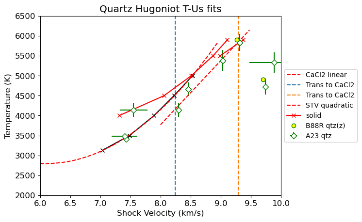
8.242930543631863
print(shockdat_list[B88RRqtz['id']].T)
print(shockdat_list[B88RRqtz['id']].P)
print(shockdat_list[B88RRqtz['id']].us)
indz = np.where(shockdat_list[B88RRqtz['id']].orientation == 'z')[0]
print(shockdat_list[B88RRqtz['id']].T[ind])
print(shockdat_list[B88RRqtz['id']].P[ind])
print(shockdat_list[B88RRqtz['id']].us[ind])
[5430. 5900. 4910. 5320. 5760. 4440. 4850. 5630. 6100.]
[ 92.64844931 107.25686863 117.77935509 126.98567629 138.87270554
75.9 85.9 99.3 109.7 ]
[ 8.64 9.27 9.7 9.82 10.3 0. 0. 0. 0. ]
[5900. 4910. 5760. 4850.]
[107.25686863 117.77935509 138.87270554 85.9 ]
[ 9.27 9.7 10.3 0. ]
# Fit all solid region; Amodeo data + 1 Boslough only
#plt.errorbar(shockdat_list[B88qtz['id']].us,shockdat_list[B88qtz['id']].T,fmt='go',mfc='white',yerr=shockdat_list[B88qtz['id']].T_std,label=B88qtz['lab']+'(mult cuts)')
#plt.errorbar(shockdat_list[S81qtz['id']].us,shockdat_list[S81qtz['id']].T,fmt='gx',label=S81qtz['lab']+'(unkwn)')
ind = np.where(shockdat_list[B88RRqtz['id']].orientation == 'z')[0]
plt.errorbar(shockdat_list[B88RRqtz['id']].us[ind],shockdat_list[B88RRqtz['id']].T[ind],fmt='go',mfc='yellow',\
label=B88RRqtz['lab']+'(z)')
#ind = np.where(shockdat_list[B88RRqtz['id']].orientation == 'pz')[0]
#plt.errorbar(shockdat_list[B88RRqtz['id']].us[ind],shockdat_list[B88RRqtz['id']].T[ind],fmt='go',mfc='orange',\
# label=B88RRqtz['lab']+'(pz)')
plt.errorbar(shockdat_list[A23qtz['id']].us,shockdat_list[A23qtz['id']].T,fmt='gD',mfc='white',label=A23qtz['lab'],\
xerr=shockdat_list[A23qtz['id']].us_std,yerr=shockdat_list[A23qtz['id']].T_std)
#plt.plot(qtz_hug_cacl2.P,qtz_hug_cacl2.T,'g--',label='CaCl2 branch Hugoniot fit')
#plt.plot(qtz_hug_liq.P,qtz_hug_liq.T,'r-',label='Liquid branch Hugoniot (Z data fit)')
if 0:
print('all solid region T-Us Amodeo + 1 Boslough (P=85.9)')
inda = np.where((shockdat_list[A23qtz['id']].us>8) & (shockdat_list[A23qtz['id']].us<9.4) & (shockdat_list[A23qtz['id']].exp_id != 'shot44') & (shockdat_list[A23qtz['id']].exp_id != 'shot28') & (shockdat_list[A23qtz['id']].exp_id != 'shot27'))[0]
print('inda=',shockdat_list[A23qtz['id']].exp_id[inda])
indb = np.where((shockdat_list[B88RRqtz['id']].us>7) & (shockdat_list[B88RRqtz['id']].us<9.4) & (shockdat_list[B88RRqtz['id']].orientation == 'z'))[0]
print('indb=',indb)
indz = np.where(shockdat_list[B88RRqtz['id']].orientation == 'z')[0]
indb = indz[3] # no us known; use fitted EOS
usb = np.interp(shockdat_list[B88RRqtz['id']].P[indb],qtz_hug_solid.P,qtz_hug_solid.us)
usb_std = usb*.05
print('usb = ',usb)
inda27 = np.where(shockdat_list[A23qtz['id']].exp_id == 'shot27')[0]
fitx1 = [np.asarray(shockdat_list[A23qtz['id']].us)[inda],usb,[7.42]]
fitx = np.concatenate([np.atleast_1d(x) for x in fitx1])
fitx_std1 = [np.asarray(shockdat_list[A23qtz['id']].us_std)[inda],usb_std,[.012]]
fitx_std = np.concatenate([np.atleast_1d(x) for x in fitx_std1])
fity1 = [np.asarray(shockdat_list[A23qtz['id']].T)[inda],shockdat_list[B88RRqtz['id']].T[indb],np.asarray(shockdat_list[A23qtz['id']].T)[inda27]]
fity = np.concatenate([np.atleast_1d(x) for x in fity1])
fity_std1 = [np.asarray(shockdat_list[A23qtz['id']].T_std)[inda],shockdat_list[B88RRqtz['id']].T_std[indb],np.asarray(shockdat_list[A23qtz['id']].T_std)[inda27]]
fity_std = np.concatenate([np.atleast_1d(x) for x in fity_std1])
r1 = np.full(len(inda), shockdat_list[A23qtz['id']].refidlist[1], dtype=int)
r2 = np.full(1, shockdat_list[B88RRqtz['id']].refidlist[1], dtype=int)
r3 = np.full(len(inda), shockdat_list[A23qtz['id']].refidlist[1], dtype=int)
fitqtzrefid2 = np.concatenate((r1,r2,r3))
fitqtzreflist2=[]
for i in np.unique(fitqtzrefid2):
fitqtzreflist2.append(str(i)+': '+ref_list[i].reference[0])
# print(shockdat_list[A23qtz['id']].us[inda])
print('data:')
print(inda,indb)
print(fitx)
print(fitx_std)
print(fity)
print(fity_std)
if 1:
print('all solid region T-Us Amodeo; shot 27 mod')
inda = np.where((shockdat_list[A23qtz['id']].us>8) & (shockdat_list[A23qtz['id']].us<9.4) & (shockdat_list[A23qtz['id']].exp_id != 'shot44') & (shockdat_list[A23qtz['id']].exp_id != 'shot28') & (shockdat_list[A23qtz['id']].exp_id != 'shot27'))[0]
print('inda=',shockdat_list[A23qtz['id']].exp_id[inda])
inda27 = np.where(shockdat_list[A23qtz['id']].exp_id == 'shot27')[0]
indz = np.where(shockdat_list[B88RRqtz['id']].orientation == 'z')[0]
print(shockdat_list[B88RRqtz['id']].P[indz])
indb = indz[0] # no us known; use fitted EOS
usb = np.interp(shockdat_list[B88RRqtz['id']].P[indb],qtz_hug_solid.P,qtz_hug_solid.us)
usb_std = usb*.05
print('usb = ',usb)
fitx1 = [np.asarray(shockdat_list[A23qtz['id']].us)[inda],[7.42],usb]
fitx = np.concatenate([np.atleast_1d(x) for x in fitx1])
fitx_std1 = [np.asarray(shockdat_list[A23qtz['id']].us_std)[inda],[.012],usb_std]
fitx_std = np.concatenate([np.atleast_1d(x) for x in fitx_std1])
fity1 = [np.asarray(shockdat_list[A23qtz['id']].T)[inda],np.asarray(shockdat_list[A23qtz['id']].T)[inda27],shockdat_list[B88RRqtz['id']].T[indb]]
fity = np.concatenate([np.atleast_1d(x) for x in fity1])
fity_std1 = [np.asarray(shockdat_list[A23qtz['id']].T_std)[inda],np.asarray(shockdat_list[A23qtz['id']].T_std)[inda27],shockdat_list[B88RRqtz['id']].T_std[indb]]
fity_std = np.concatenate([np.atleast_1d(x) for x in fity_std1])
r1 = np.full(len(inda), shockdat_list[A23qtz['id']].refidlist[1], dtype=int)
r3 = np.full(len(inda), shockdat_list[A23qtz['id']].refidlist[1], dtype=int)
r4 = np.full(1, shockdat_list[B88RRqtz['id']].refidlist[1], dtype=int)
fitqtzrefid2 = np.concatenate((r1,r3,r4))
fitqtzreflist2=[]
for i in np.unique(fitqtzrefid2):
fitqtzreflist2.append(str(i)+': '+ref_list[i].reference[0])
# print(shockdat_list[A23qtz['id']].us[inda])
print('data:')
print(inda,indb)
print(fitx)
print(fitx_std)
print(fity)
print(fity_std)
plt.plot(fitx,fity,'rX',markersize=10)
print('HPEOS T-Us FIT ALL SOLID REGION')
# initialize the HPeos_Fit class
qtz_fitTus_solid = hp.HPeos_Fit()
qtz_fitTus_solid.matid = 174
qtz_fitTus_solid.material = 'Quartz'
qtz_fitTus_solid.formula = 'SiO2'
qtz_fitTus_solid.rho_ref = 2.650
qtz_fitTus_solid.rho_ref_units = 'g/cm³'
qtz_fitTus_solid.x = fitx
qtz_fitTus_solid.f = fity
qtz_fitTus_solid.x_std = fitx_std
qtz_fitTus_solid.f_std = fity_std
qtz_fitTus_solid.refid = fitqtzrefid2
qtz_fitTus_solid.reflist = fitqtzreflist2
qtz_fitTus_solid.x_var = 'us'
qtz_fitTus_solid.f_var = 'T'
qtz_fitTus_solid.x_units = 'km/s'
qtz_fitTus_solid.f_units = 'K'
qtz_fitTus_solid.x_desc = 'Shock Velocity'
qtz_fitTus_solid.f_desc = 'Temperature'
qtz_fitTus_solid.phase_fit = 'solid'
qtz_fitTus_solid.remlist.append('Fit to T-Us for all region on the Hugoniot: Amodeo and Boslough data with impedance match only.')
DateTime_in_ISOFormat = datetime.datetime.now(zoneinfo.ZoneInfo('UTC')).isoformat('T', 'seconds') #
qtz_fitTus_solid.actions = [['Sarah T. Stewart','create',DateTime_in_ISOFormat,'new fit']]
qtz_fitTus_solid.curvetype = 'quadratic'
qtz_fitTus_solid.outputfitpath = outputfitpath # in load_paths.py
qtz_fitTus_solid.filename = 'qtz_fitTus_solid_quadratic'
qtz_fitTus_solid.fit()
print('FIT EOS a = ',qtz_fitTus_solid.a)
print('FIT EOS cov = ',qtz_fitTus_solid.cov)
qtz_fitTus_solid.savejson()
qtz_fitTus_solid.savereadable()
print('rms = ',qtz_fitTus_solid.rms)
print('qtz_fitTus_solid check:')
qtz_fitTus_solid.comparecoefs(qtz_fitTus_solid0.a)
nup = np.arange(7,9.5,.04)
nus = qtz_fitTus_solid.calcf(nup)
plt.plot(nup,nus,'r--',label='solid quadratic')
#plt.plot([qtz_trans_cacl2_us,qtz_trans_cacl2_us],[0,10000],'--',label='Trans to CaCl2')
plt.plot([qtz_wiggle_us1,qtz_wiggle_us1],[0,10000],'--',label='Wiggle')
#plt.plot(stvusmodel,stvtmodel,'k-x')
#plt.plot(cacl2usmodel,cacl2tmodel,'r-x')
plt.legend(loc='center left', bbox_to_anchor=(1, 0.5),fontsize=10)
plt.xlabel('Shock Velocity (km/s)')
plt.ylabel('Temperature (K)')
plt.ylim(2000,6500)
plt.xlim(6,10)
plt.title('Quartz Hugoniot All solid T-Us fits')
plt.show()
#print(qtz_trans_cacl2_us)
all solid region T-Us Amodeo; shot 27 mod
inda= ['shot14' 'shot45' 'shot47' 'shot48']
[107.25686863 117.77935509 138.87270554 85.9 ]
usb = 9.252666384714555
data:
[0 6 7 8] 1
[8.46 9.317 9.032 8.2994 7.42 9.25266638]
[0.015 0.0111 0.046 0.0042 0.012 0.46263332]
[4661. 5837. 5384. 4136.765735 3412.766828 5900. ]
[172. 213. 264. 169.151493 91.982392 200. ]
HPEOS T-Us FIT ALL SOLID REGION
FIT EOS a = [13817.14362212 -3554.25351558 289.9608017 ]
FIT EOS cov = [[ 1.56253617e+08 -3.81866164e+07 2.31515479e+06]
[-3.81866164e+07 9.34151115e+06 -5.66912756e+05]
[ 2.31515479e+06 -5.66912756e+05 3.44400177e+04]]
Saved EOS fit in qtz_fitTus_solid_quadratic.txt
Saved EOS fit in readable file qtz_fitTus_solid_quadratic-readable.txt
rms = 109.58871123287201
qtz_fitTus_solid check:
Coefficients are the same.
[13817.14362212 -3554.25351558 289.9608017 ]
[13817.14362212 -3554.25351558 289.9608017 ]
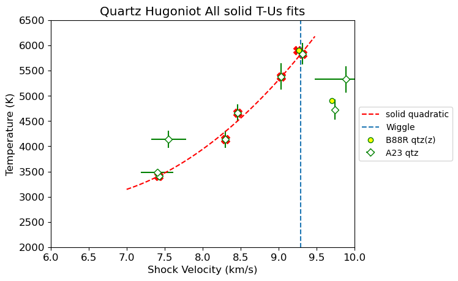
print('CHECK THIS Quartz SOLID region Solidus intersection:')
x,y=intersection(stsmcsmooth.P,stsmcsmooth.rho_s,qtz_hug_solid.P,qtz_hug_solid.rho)
print('P, rho intersection point = ',x,y)
print('us = ',np.interp(x,qtz_hug_solid.P,qtz_hug_solid.us))
print('up = ',np.interp(x,qtz_hug_solid.P,qtz_hug_solid.up))
print('T = ',np.interp(x,qtz_hug_solid.P,qtz_hug_solid.T))
print('Compare to P, us = ',qtz_startsol_P,qtz_startsol_us)
CHECK THIS Quartz SOLID region Solidus intersection:
P, rho intersection point = [100.50773756] [4.99116474]
us = [8.9921134]
up = [4.21785694]
T = [5302.57353325]
Compare to P, us = 100.50773755669458 8.992113395140894
# Fit the Omega data above Us 10.5 km/s for liquid region
mss = 1
print(max(M70811.us))
print(max(M70813.us))
print(max(M70817.us))
print(max(M70820.us))
# FIT the Seifertite region 9.5 to 10.4 km/s
qtz_us_fitmax = 35
us_fitstart=qtz_wiggle_us2
ind11 = np.where((M70811.us > us_fitstart) & (M70811.us < qtz_us_fitmax) )[0]
ind13 = np.where((M70813.us > us_fitstart) & (M70813.us < qtz_us_fitmax) )[0]
ind17 = np.where((M70817.us > us_fitstart) & (M70817.us < qtz_us_fitmax) )[0]
ind20 = np.where((M70820.us > us_fitstart) & (M70820.us < qtz_us_fitmax) )[0]
plt.plot(M70811.us[ind11],M70811.T[ind11],'.',markersize=mss)
plt.plot(M70813.us[ind13],M70813.T[ind13],'.',markersize=mss)
plt.plot(M70817.us[ind17],M70817.T[ind17],'.',markersize=mss)
plt.plot(M70820.us[ind20],M70820.T[ind20],'.',markersize=mss)
fitus = np.concatenate((M70811.us[ind11],M70813.us[ind13],M70817.us[ind17],M70820.us[ind20]))
fitt = np.concatenate((M70811.T[ind11],M70813.T[ind13],M70817.T[ind17],M70820.T[ind20]))
rescov = np.polyfit(fitus,fitt,3,cov=True)
print('Temperature fit in the liquid region: ')
print(rescov)
res=rescov[0]
plt.plot(fitus,res[3]+res[2]*fitus+res[1]*fitus**2+res[0]*fitus**3,'k.',linewidth=3,markersize=mss)
#plt.plot(qtz_hug_liq.us,qtz_hug_liq.T,'g-',label='Qtz Hug Liq NEW')
if 1:
fitus_std = .005*fitus
fitt_std = np.concatenate((M70811.T_std[ind11],M70813.T_std[ind13],M70817.T_std[ind17],M70820.T_std[ind20]))
r1 = np.full(len(fitus), shockdat_list[MDqtz70811['id']].refidlist[1], dtype=int)
# fitqtzrefid2 = np.concatenate((r1))
fitqtzreflist2=[]
for i in np.unique(r1):
fitqtzreflist2.append(str(i)+': '+ref_list[i].reference[0])
print('HPEOS T-Us FIT LIQUID REGION')
# initialize the HPeos_Fit class
qtz_fitTus_liq = hp.HPeos_Fit()
qtz_fitTus_liq.matid = 174
qtz_fitTus_liq.material = 'Quartz'
qtz_fitTus_liq.formula = 'SiO2'
qtz_fitTus_liq.rho_ref = 2.650
qtz_fitTus_liq.rho_ref_units = 'g/cm³'
qtz_fitTus_liq.x = fitus
qtz_fitTus_liq.f = fitt
qtz_fitTus_liq.x_std = fitus_std
qtz_fitTus_liq.f_std = fitt_std
qtz_fitTus_liq.refid = r1
qtz_fitTus_liq.reflist = fitqtzreflist2
qtz_fitTus_liq.x_var = 'us'
qtz_fitTus_liq.f_var = 'T'
qtz_fitTus_liq.x_units = 'km/s'
qtz_fitTus_liq.f_units = 'K'
qtz_fitTus_liq.x_desc = 'Shock Velocity'
qtz_fitTus_liq.f_desc = 'Temperature'
qtz_fitTus_liq.phase_fit = 'liquid'
qtz_fitTus_liq.remlist.append('Fit to liquid region on the Hugoniot including supercooled shock front below the melt curve.')
qtz_fitTus_liq.remlist.append('Only including Omega decaying shock data.')
DateTime_in_ISOFormat = datetime.datetime.now(zoneinfo.ZoneInfo('UTC')).isoformat('T', 'seconds') #
qtz_fitTus_liq.actions = [['Sarah T. Stewart','create',DateTime_in_ISOFormat,'new fit']]
qtz_fitTus_liq.curvetype = 'cubic'
qtz_fitTus_liq.outputfitpath = outputfitpath # in load_paths.py
qtz_fitTus_liq.filename = 'qtz_fitTus_liq_cubic'
qtz_fitTus_liq.fit()
print('FIT EOS a = ',qtz_fitTus_liq.a)
print('FIT EOS cov = ',qtz_fitTus_liq.cov)
qtz_fitTus_liq.savejson()
qtz_fitTus_liq.savereadable()
print('rms = ',qtz_fitTus_liq.rms)
print('qtz_fitTus_liq check:')
qtz_fitTus_liq.comparecoefs(qtz_fitTus_liq0.a)
nup = np.arange(9,20,.04)
nus = qtz_fitTus_liq.calcf(nup)
plt.plot(nup,nus,'r--',label='fit cubic')
plt.xlim(8,max(fitus))
plt.ylim(4000,max(fitt))
plt.ylabel('Shock Temperature (K)')
plt.xlabel('Shock Velocity (km/s)')
#plt.plot([qtz_startliq_us ,qtz_startliq_us ],[0,10000],'k-')
#plt.plot([0,20],[6212,6212],'k-')
plt.title('Liquid region temperature fit')
plt.savefig(outputfigpath+'H1c-Omega-qtz-Us-T.pdf')
plt.show()
16.42
13.23
13.22
18.6
Temperature fit in the liquid region:
(array([ 7.17555125e+00, -1.61423024e+02, 2.36687007e+03, -9.37407549e+03]), array([[ 9.45671473e-02, -3.90306920e+00, 5.25826556e+01,
-2.31165369e+02],
[-3.90306920e+00, 1.61629916e+02, -2.18489073e+03,
9.63724761e+03],
[ 5.25826556e+01, -2.18489073e+03, 2.96392333e+04,
-1.31196661e+05],
[-2.31165369e+02, 9.63724761e+03, -1.31196661e+05,
5.82849629e+05]]))
HPEOS T-Us FIT LIQUID REGION
FIT EOS a = [-4391.27584577 1263.49808289 -81.26334251 5.26247505]
FIT EOS cov = [[ 8.27233932e+06 -1.91911572e+06 1.45809520e+05 -3.62473982e+03]
[-1.91911572e+06 4.46699097e+05 -3.40511149e+04 8.49217008e+02]
[ 1.45809520e+05 -3.40511149e+04 2.60436381e+03 -6.51689028e+01]
[-3.62473982e+03 8.49217008e+02 -6.51689028e+01 1.63632442e+00]]
Saved EOS fit in qtz_fitTus_liq_cubic.txt
Saved EOS fit in readable file qtz_fitTus_liq_cubic-readable.txt
rms = 197.9384524168625
qtz_fitTus_liq check:
Coefficients are the same.
[-4391.27584577 1263.49808289 -81.26334251 5.26247505]
[-4391.27584577 1263.49808289 -81.26334251 5.26247505]
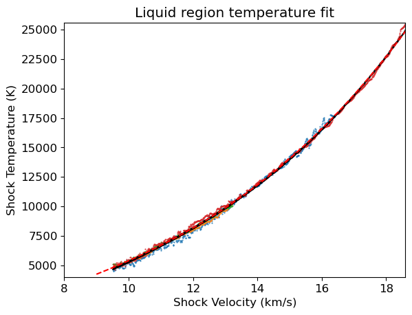
# Fit the Omega data above Us 10.5 km/s for liquid region
mss = 4
plt.plot(M70811.us,M70811.T,'.',markersize=mss)
plt.plot(M70813.us,M70813.T,'.',markersize=mss)
plt.plot(M70817.us,M70817.T,'.',markersize=mss)
plt.plot(M70820.us,M70820.T,'.',markersize=mss)
if 0:
qtz_us_fitmax = 15
us_fitstart=qtz_wiggle_us2
ind11 = np.where((M70811.us > us_fitstart) & (M70811.us < qtz_us_fitmax) )[0]
ind13 = np.where((M70813.us > us_fitstart) & (M70813.us < qtz_us_fitmax) )[0]
ind17 = np.where((M70817.us > us_fitstart) & (M70817.us < qtz_us_fitmax) )[0]
ind20 = np.where((M70820.us > us_fitstart) & (M70820.us < qtz_us_fitmax) )[0]
fitus = np.concatenate((M70811.us[ind11],M70813.us[ind13],M70817.us[ind17],M70820.us[ind20]))
fitt = np.concatenate((M70811.T[ind11],M70813.T[ind13],M70817.T[ind17],M70820.T[ind20]))
rescov = np.polyfit(fitus,fitt,3,cov=True)
print('Temperature fit in the liquid region: ')
print(rescov)
res=rescov[0]
plt.plot(fitus,res[3]+res[2]*fitus+res[1]*fitus**2+res[0]*fitus**3,'k.',linewidth=1,markersize=mss)
plt.plot(qtz_hug_liq.us,qtz_hug_liq.T,'g-',label='Qtz Hug Liq NEW')
plt.xlim(8,13)
plt.ylim(4000,10000)
plt.ylabel('Shock Temperature (K)')
plt.xlabel('Shock Velocity (km/s)')
plt.plot([qtz_startliq_us ,qtz_startliq_us ],[0,10000],'k-')
plt.plot([0,20],[6212,6212],'k-')
plt.title('Liquid region temperature fit')
plt.savefig(outputfigpath+'H1c-Omega-qtz-Us-T.pdf')
plt.show()
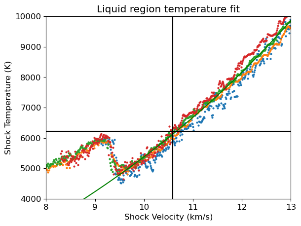
plt.plot(stsmcsmooth.P,stsmcsmooth.T,'m-')
plt.errorbar(shockdat_list[B88qtz['id']].P,shockdat_list[B88qtz['id']].T,fmt='go',mfc='white',yerr=shockdat_list[B88qtz['id']].T_std,label=B88qtz['lab']+'(mult cuts)')
plt.errorbar(shockdat_list[S81qtz['id']].P,shockdat_list[S81qtz['id']].T,fmt='gx',label=S81qtz['lab']+'(unkwn)')
ind = np.where(shockdat_list[B88RRqtz['id']].orientation == 'z')[0]
plt.errorbar(shockdat_list[B88RRqtz['id']].P[ind],shockdat_list[B88RRqtz['id']].T[ind],fmt='go',mfc='yellow',\
label=B88RRqtz['lab']+'(z)')
ind = np.where(shockdat_list[B88RRqtz['id']].orientation == 'pz')[0]
plt.errorbar(shockdat_list[B88RRqtz['id']].P[ind],shockdat_list[B88RRqtz['id']].T[ind],fmt='go',mfc='orange',\
label=B88RRqtz['lab']+'(pz)')
plt.errorbar(shockdat_list[A23qtz['id']].P,shockdat_list[A23qtz['id']].T,fmt='gD',mfc='white',\
label=A23qtz['lab']+'(z)')
if 0:
# old UCD fit
# new high-precision data (upper 3 points; lowest has T but poor Us so using P from the fit)
ucdpnew = np.asarray([65.29,84.709,102.44,109.866])
ucdtnew = np.asarray([3576.6,4484,5384,5837])
ucdtnew_err = np.asarray([57,212,264,213])
plt.errorbar(ucdpnew,ucdtnew,yerr=ucdtnew_err,fmt='gD',mfc='white',label='New qtz(z-cut)')
inda= np.where(shockdat_list[B88qtz['id']].P < 111)
#print(shockdat_list[B88qtz['id']].P[inda])
indb= np.where((shockdat_list[S81qtz['id']].P < 111) & (shockdat_list[S81qtz['id']].P >60))
#print(shockdat_list[S81qtz['id']].P[indb])
#fitp = np.concatenate((shockdat_list[B88qtz['id']].P[inda],shockdat_list[S81qtz['id']].P[indb]))
#fitt = np.concatenate((shockdat_list[B88qtz['id']].T[inda],shockdat_list[S81qtz['id']].T[indb]))
#res = np.polyfit(fitp,fitt,1,cov=True)
rescov = np.polyfit(ucdpnew,ucdtnew,1,cov=True)
res = rescov[0]
print('UCD FIT CaCl2-branch P-T fit for z-cut qtz =')
print(rescov)
ptemp = np.arange(40,Pt3)
plt.plot(ptemp,res[1]+res[0]*ptemp)
#if 1:
# new UCD fit summer 2024
plt.plot(qtz_hug_stv.P,qtz_hug_stv.T,'g-',label='stv branch Hugoniot fit')
plt.plot(qtz_hug_solid.P,qtz_hug_solid.T,'g--',label='Solid branch Hugoniot fit')
#plt.plot(qtz_hug_cacl2.P,qtz_hug_cacl2.T,'g--',label='CaCl2 branch Hugoniot fit')
#plt.plot([liqpmin,liqpmin],[2000,7000],'r--',label='Qtz enters liquid')
#plt.plot(qtz_hug_glass.P,qtz_hug_glass.T,'r-',label='Metastable region (Z data fit)')
plt.plot(qtz_hug_liq.P,qtz_hug_liq.T,'r-',label='Liquid branch Hugoniot \n(Z+L83redo data fit)')
plt.legend(loc='center left', bbox_to_anchor=(1, 0.5),fontsize=10)
plt.xlabel('Pressure (GPa)')
plt.ylabel('Temperature (K)')
plt.ylim(2000,7000)
plt.xlim(30,160)
plt.title('Quartz Hugoniot P-T fits')
plt.show()
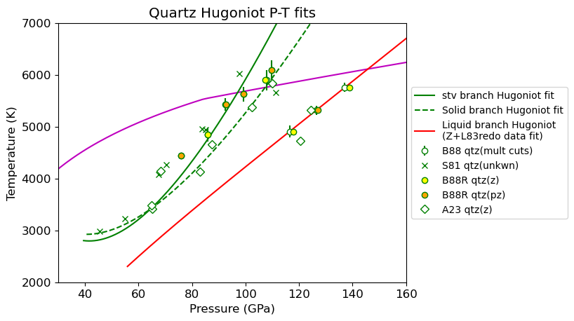
print('CHECK THIS LIQUIDUS INTERSECTION:')
x,y=intersection(stsmcsmooth.P,stsmcsmooth.T,qtz_hug_liq.P,qtz_hug_liq.T)
print('P, T intersection point = ',x,y)
print('us = ',np.interp(x,qtz_hug_liq.P,qtz_hug_liq.us))
print('up = ',np.interp(x,qtz_hug_liq.P,qtz_hug_liq.up))
print('rho = ',np.interp(x,qtz_hug_liq.P,qtz_hug_liq.rho))
print('Compare to P, us = ',qtz_startliq_P,qtz_startliq_us)
CHECK THIS LIQUIDUS INTERSECTION:
P, T intersection point = [145.80938585] [6117.08010474]
us = [10.5834999]
up = [5.19888539]
rho = [5.20859462]
Compare to P, us = 145.80682496155464 10.58341924436943
Millot 2015 T-Us fit comparison#
Millot et al. 2015 supplement
Between Us 10.2km/s and 24km/s: T (K) = 1421.9 + 4.3185 Us$^{2.9768}.
Us> 25 km/s: T (K) = −54567 + 4384.6 Us
us_m15 = np.arange(10.2,24,0.1)
t_m15 = 1421.9+4.3185*np.pow(us_m15,2.9768)
us_m15b = np.arange(25,35,0.1)
t_m15b = -54567+4384.6*us_m15b
ind = np.where((qtz_hug_liq.us>10.3) & (qtz_hug_liq.us<18))[0]
plt.plot(qtz_hug_liq.us[ind],qtz_hug_liq.T[ind],label='This work 10.3-18 km/s')
plt.plot(us_m15,t_m15,label='M15 fit 10.2-24 km/s')
plt.plot(us_m15b,t_m15b,label='M15 fit 25-(not given) km/s')
plt.xlabel('Shock Velocity (km/s)')
plt.ylabel('Temperature (K)')
plt.title('α-Quartz (z-cut) Hugoniot Temperature Fits')
plt.legend()
plt.show()
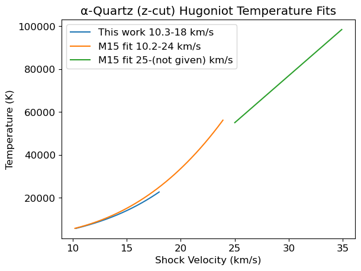
Check consistency between EOS and Hugoniot Fits#
# check T(P,rho) model vs. data
pmodel=[]
for iii in range(len(qtz_hug_stv.T)):
stvpvt.isotherm_stv(qtz_hug_stv.T[iii])
pmodel.append(np.interp(qtz_hug_stv.rho[iii],stvpvt.rhoarr,stvpvt.isotherm_p))
plt.plot(qtz_hug_stv.rho,qtz_hug_stv.P,label='fit to data')
plt.plot(qtz_hug_stv.rho,pmodel,label='Model EOS P from rho-T')
plt.title('qtz stv region: data and EOS agree')
plt.legend()
plt.ylim(35,90)
plt.xlim(4.5,4.9)
plt.xlabel('Density (g/cm3)')
plt.ylabel('Pressure (GPa)')
plt.savefig(outputfigpath+'qtz-stv-test.pdf')
plt.show()
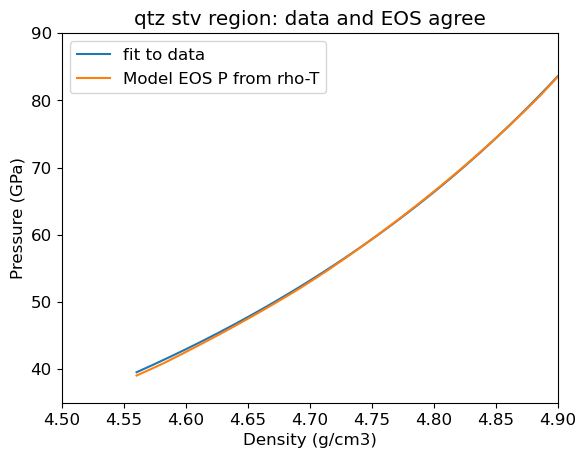
pmodel=[]
for iii in range(len(qtz_hug_cacl2.T)):
stvpvt.isotherm_stv(qtz_hug_cacl2.T[iii])
pmodel.append(np.interp(qtz_hug_cacl2.rho[iii],stvpvt.rhoarr,stvpvt.isotherm_p))
plt.plot(qtz_hug_cacl2.rho,qtz_hug_cacl2.P,label='fit to data')
plt.plot(qtz_hug_cacl2.rho,pmodel,label='Model EOS P from rho-T')
plt.title('qtz CaCl2 region: data are less dense than model\nconverging near solidus')
plt.ylim(55,120)
plt.legend()
plt.xlabel('Density (g/cm3)')
plt.ylabel('Pressure (GPa)')
plt.savefig(outputfigpath+'qtz-cacl2-test.pdf')
plt.show()
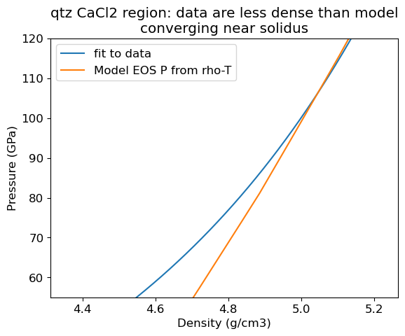
# check T(P,rho) model vs. data
pmodel=[]
for iii in range(len(qtz_hug_solid.T)):
stvpvt.isotherm_stv(qtz_hug_solid.T[iii])
pmodel.append(np.interp(qtz_hug_solid.rho[iii],stvpvt.rhoarr,stvpvt.isotherm_p))
pmodel=np.asarray(pmodel)
ind = np.where((qtz_hug_solid.P > 60) & (qtz_hug_solid.P < qtz_wiggle_P1))[0]
plt.plot(qtz_hug_solid.rho[ind],qtz_hug_solid.P[ind],label='fit to data')
ind = np.where((pmodel > 60) & (pmodel < qtz_wiggle_P1))[0]
plt.plot(qtz_hug_solid.rho[ind],pmodel[ind],label='Model EOS P from rho-T')
plt.title('qtz solid region: data and EOS DO NOT agree\nlikely metastable')
plt.legend()
plt.ylim(50,120)
plt.xlim(4.7,5.05)
plt.xlabel('Density (g/cm3)')
plt.ylabel('Pressure (GPa)')
plt.savefig(outputfigpath+'qtz-solid-test.pdf')
plt.show()
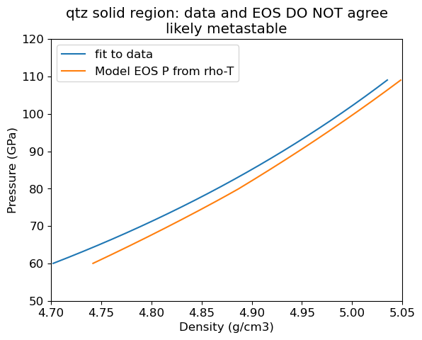